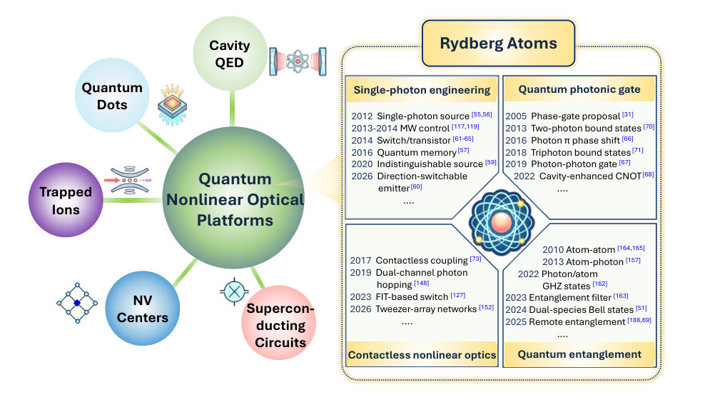
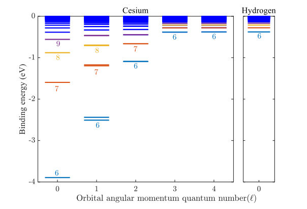

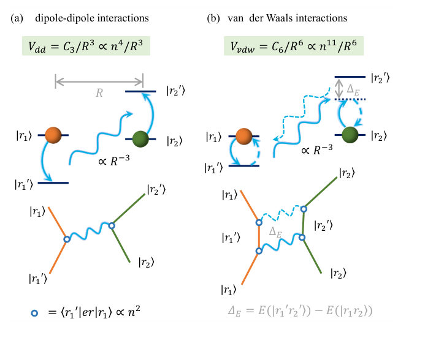
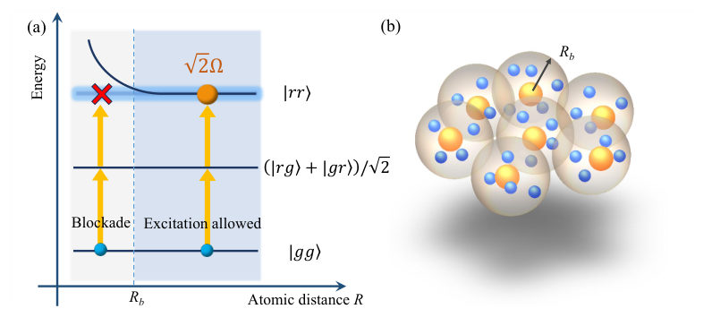
Highlighted author(s): Yuto Ashida
Authors: Jun Mochida, Atac Imamoglu, Yuto Ashida
Type: theory · Category: strongly correlated electrons · PDF: https://arxiv.org/pdf/2608.03714v1
Analysis basis: full PDF text, analyzed in chunks
Topic relevance: 🔥 Kondo & dissipative impurity 4/5 · 🔥 analog quantum simulation 4/5 · 🔥 correlated cavity matter 4/5 · Keldysh / 2PI / non-Gaussian methods 3/5 · driven-dissipative phase transition 3/5 · methods for driven-dissipative 3/5 · non-equilibrium dynamics 2/5 · non-equilibrium universality 2/5 · Tavis-Cummings & cavity-many-emitter 1/5 · exotic spin models in light-matter 1/5 · spintronics-quantum-optics interface 1/5
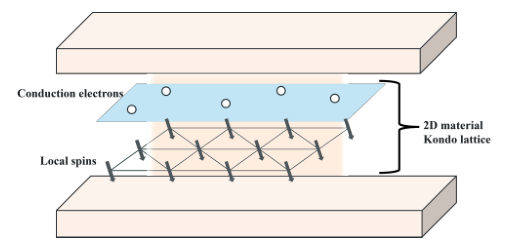
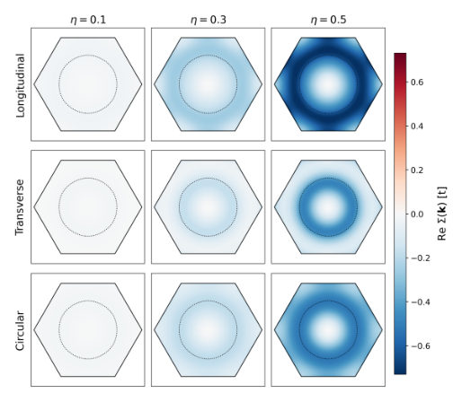
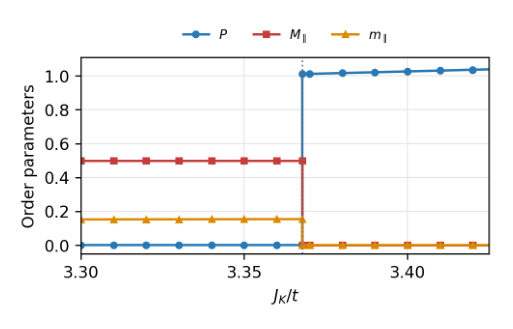
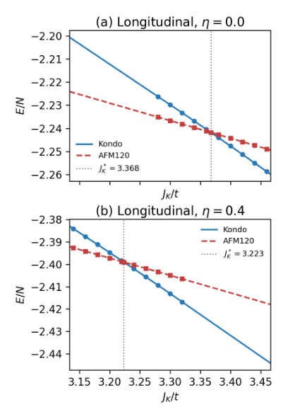
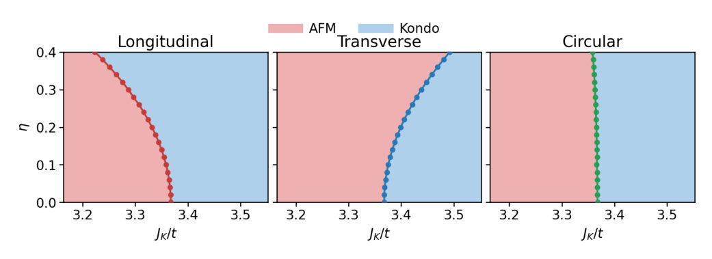
Summary. This theoretical paper demonstrates that vacuum fluctuations from planar optical cavities can act as a tunable control knob for quantum phase transitions in 2D Kondo lattices. By calculating the cavity-induced self-energy, the authors show that the specific geometry of the electromagnetic field dictates whether the system stabilizes a heavy-fermion state or an antiferromagnetic magnetic order.
Why it may be interesting. This work directly bridges cavity QED (AMO physics) with strongly correlated matter by showing how external electromagnetic fields can tune fundamental many-body parameters like exchange couplings and hybridization strengths in solid-state systems.
Main problem. The study investigates how vacuum fluctuations from confined electromagnetic cavities can be used to actively control quantum phase transitions (QPTs) occurring in two-dimensional Kondo lattices.
Main result. Cavity-induced interactions modify the conduction band via a momentum-dependent self-energy, demonstrating that the geometry of the cavity field (longitudinal vs. transverse) dictates whether the system favors a heavy-fermion or magnetically ordered state.
Method. The analysis employs mean-field theory applied to an effective periodic Anderson model coupled to cavity modes, calculating leading-order corrections via self-energy renormalization.
Model / system. The physical system is a 2D Kondo lattice, modeled by coupling conduction electrons and localized f-moments. The Hamiltonian includes terms for the electronic structure, local moments, and the cavity field, which mediates an effective electron-electron interaction.
Key observables. Quantum phase transition boundaries (Heavy-fermion vs. Antiferromagnetic), Kondo hybridization order parameter ($P$), renormalized energy bands ($E_{\pm}^k$).
Important parameters / regimes. Cavity coupling strength ($\eta$), filling fraction ($ ho_e$), and the geometry of the cavity field (longitudinal, transverse, circular).
Assumptions / limitations. The analysis uses a perturbative treatment for the cavity interaction ($\eta \ll 1$) and relies on mean-field approximations for both the Kondo screening and magnetic ordering.
Figures summary. Figures illustrate the polarization dependence of the self-energy $\Sigma(k)$ in square lattices, phase diagrams showing transition boundaries vs. coupling strength ($\eta$), and shifts in the critical coupling constant ($J_K$).
Paper structure. The paper builds from defining the coupled Hamiltonian to deriving an effective electron-electron interaction via virtual photon exchange. It then applies mean-field theory to compare the free energies of the heavy-fermion phase against magnetically ordered states, analyzing results for different lattice geometries.
Cavity quantum electrodynamics offers a route to control quantum phases by using vacuum fluctuations of confined electromagnetic fields. In particular, planar cavities based on polar van der Waals materials can generate strongly confined modes and are promising for controlling two-dimensional correlated materials. Recently, moiré materials have become central platforms for studying two-dimensional heavy-fermion systems and their quantum phase transitions. Kondo lattices provide a prototypical model for studying quantum phase boundaries, driven by competition between Kondo screening and the ordering of local magnetic moments. We show that a cavity-induced interaction can shift the quantum phase transitions between a heavy-fermion phase and an antiferromagnetic phase in a two-dimensional Kondo lattice through a momentum-dependent self-energy of the conduction bands. For the longitudinal projected field motivated by h-BN hyperbolic phonon polaritons, the self-energy favors Kondo hybridization and expands the heavy-fermion region. Transverse and circular in-plane model structures give distinct effects, with the transverse case relatively favoring the magnetically ordered phase and the circular case lying between the longitudinal and transverse cases. These results indicate that electromagnetic vacuum fluctuations can effectively modify the control parameters of strongly correlated two-dimensional Kondo materials.
Highlighted author(s): Ignacio Cirac
Authors: Yale Yauk, Yuhan Liu, Ignacio Cirac
Type: theory · Category: numerical methods · PDF: https://arxiv.org/pdf/2608.02724v1
Analysis basis: full PDF text, analyzed in chunks
Topic relevance: 🔥 methods for driven-dissipative 4/5 · entanglement & information structure 3/5 · non-equilibrium dynamics 2/5 · Keldysh / 2PI / non-Gaussian methods 1/5 · analog quantum simulation 1/5 · correlated / nonlocal dissipation 1/5 · driven-dissipative phase transition 1/5
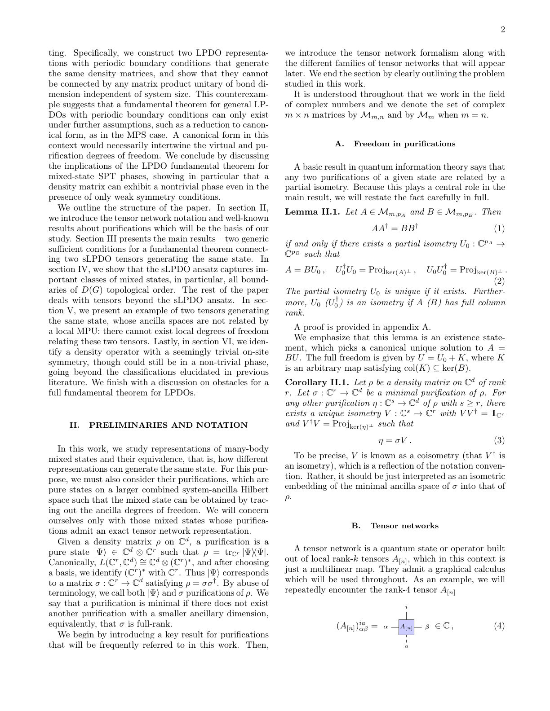
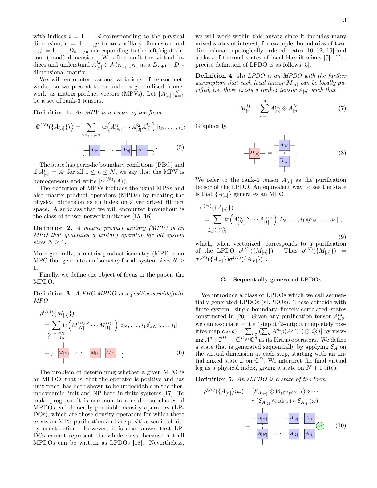
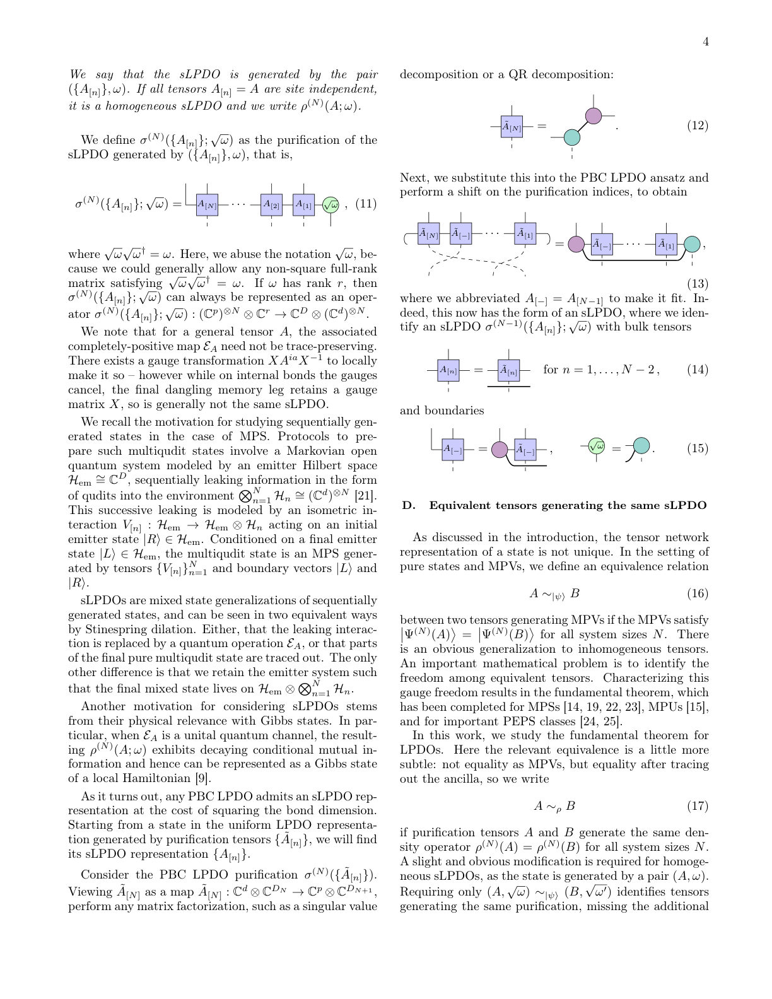
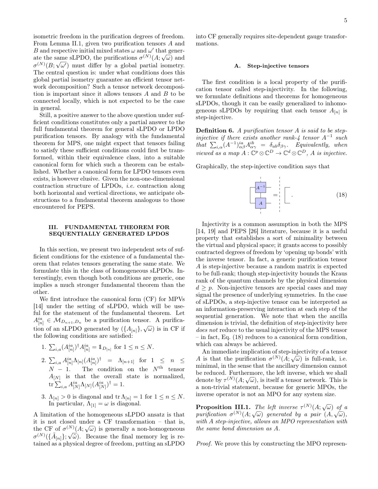
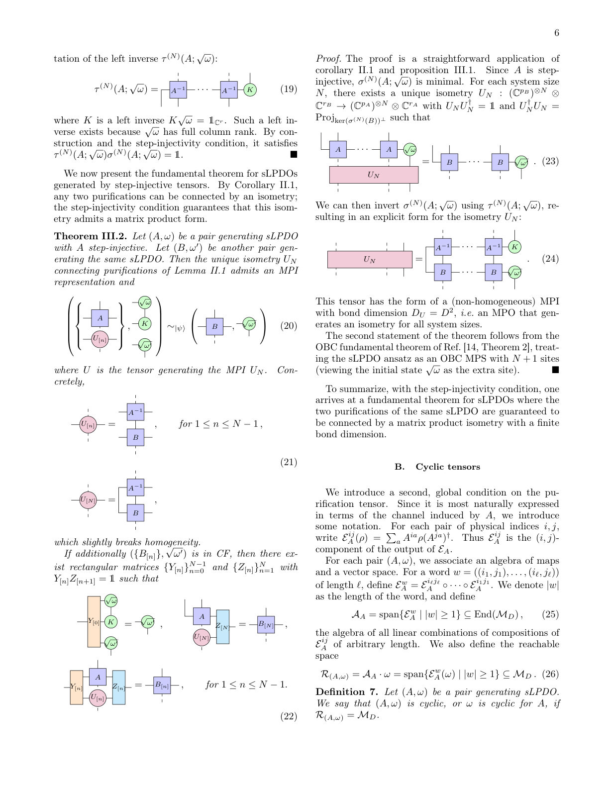
Summary. This paper develops a fundamental theorem to characterize when different tensor network representations yield the same mixed-state density operator, focusing on LPDOs. It proves equivalence for a restricted subclass (sLPDOs) using matrix product isometries but highlights that general cases may be more complex. The work advances the mathematical tools used to simulate and understand quantum phases of matter.
Why it may be interesting. This work provides deep structural insights into how quantum information (the state $ ho$) can be encoded in different mathematical forms (tensors), which is crucial for understanding the limitations and power of tensor network simulations in condensed matter physics.
Main problem. The work aims to establish a fundamental theorem characterizing the equivalence of different tensor network representations for mixed-state density operators, specifically focusing on Locally Purifiable Density Operators (LPDOs). It seeks an analogy to existing theorems for MPS and MPOs.
Main result. For sequentially generated LPDOs (sLPDOs), two representations generating the same density matrix are equivalent if and only if they are related by a specific matrix product isometry acting on the purification bonds, provided suitable invertibility conditions hold.
Method. The authors employ advanced tensor network techniques, analyzing the mathematical structure of purification tensors for mixed states to derive necessary and sufficient conditions for representation equivalence.
Model / system. The focus is on characterizing density operators ($ ho$) that can be represented as Matrix Product Locally Purifiable Density Operators (LPDOs), which are a subclass of MPOs describing quantum phases of matter, particularly those arising from successive applications of quantum channels (sLPDOs).
Key observables. The density operator $ ho(N)$, the purification tensor $A[n]$, and correlation functions like $\langle Q_k Q_{k'} angle_{ ho(M)_\alpha}$.
Important parameters / regimes. System size ($N$), bond dimensions, and parameters ($\alpha$) governing the dressing operators.
Assumptions / limitations. The analysis for sLPDOs relies on suitable invertibility or cyclic conditions; a counterexample is provided showing that general LPDOs with periodic boundary conditions may lack such a simple fundamental theorem.
Figures summary. Not specified in detail, but the notes reference mathematical derivations involving tensor structures (e.g., Eq. 6, Eq. B1) and correlation function calculations.
Paper structure. The paper progresses from general purification theory to defining LPDOs/sLPDOs, establishing sufficient conditions for equivalence using step-injectivity, and finally contrasting these results with known structures like those derived from abelian groups or MPO dressing.
Tensor network methods provide powerful analytical and numerical tools for characterizing quantum phases of matter. While the mathematical structure of matrix product states (MPS) is well understood through the MPS fundamental theorem, an analogous understanding for mixed-state tensor networks remains largely absent: if two purification tensors generate the same density matrix, how are they related? In this work, we initiate the study of a fundamental theorem for matrix product locally purifiable density operators (LPDOs) and focus on sequentially generated LPDOs (sLPDOs), a broad subclass admitting an interpretation in terms of successive applications of quantum channels on an initial state. We prove that, under suitable invertibility or cyclic conditions, two sLPDO representations generate the same density matrix for arbitrary system sizes if and only if they are related by a matrix product isometry acting on the purification bonds. Beyond the sLPDO setting, we provide a counterexample that suggests an obstruction to a general fundamental theorem for LPDOs with periodic boundary conditions. Finally, we discuss implications for mixed-state symmetry-protected topological phases, including the possibility of nontrivial phases protected only by weak symmetry conditions.
Highlighted author(s): Murray J. Holland
Authors: Jarrod T. Reilly, Murray J. Holland
Type: theory · Category: other · PDF: https://arxiv.org/pdf/2608.03997v1
Analysis basis: full PDF text, analyzed in chunks
Topic relevance: analog quantum simulation 3/5 · correlated cavity matter 3/5 · Tavis-Cummings & cavity-many-emitter 2/5 · Keldysh / 2PI / non-Gaussian methods 1/5 · interference shaping light 1/5
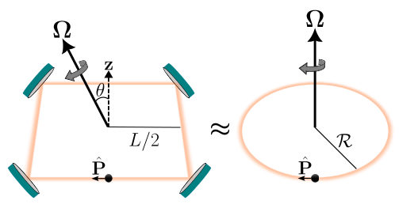
Summary. This paper develops a comprehensive quantum electrodynamics model for atoms inside a rotating optical ring cavity by starting from the Dirac equation in curved spacetime. Through successive approximations and transformations, it arrives at a modified Jaynes-Cummings Hamiltonian. The key theoretical contribution is predicting measurable shifts—the rotation-induced hyperfine shift and Sagnac shift—due to the non-inertial nature of the cavity.
Why it may be interesting. This work bridges general relativity/curved spacetime effects with modern cavity QED, providing a concrete theoretical prediction (the rotation-induced shift) that can be tested in advanced atomic clock or sensing platforms.
Main problem. The paper derives a quantum optics model for atoms placed inside an optical ring resonator that is undergoing rotation, starting from fundamental principles.
Main result. It yields a modified Jaynes-Cummings Hamiltonian that explicitly incorporates rotational effects, predicting both a rotation-induced hyperfine shift and the Sagnac shift in the cavity modes.
Method. The derivation proceeds through multiple theoretical steps: starting with the Dirac equation in curved spacetime, taking the non-relativistic limit via Foldy-Wouthuysen transformations, and finally using multipole expansions.
Model / system. The system is a protium atom interacting with an electromagnetic field confined within a rotating ring cavity. The theoretical framework involves coupling the Dirac equation to the E&M field in a curved spacetime described by the generalized Born metric.
Key observables. Rotation-induced hyperfine shift, Sagnac shift for counterpropagating modes, and the modified Jaynes-Cummings Hamiltonian parameters.
Important parameters / regimes. Angular velocity ($\Omega$), atomic transition frequencies, cavity mode structure (1D ring approximation).
Assumptions / limitations. The derivation relies on several approximations: non-relativistic limit (FW transformation), electric dipole approximation, two-level system assumption, and the rotating-wave approximation.
Figures summary. Figure 1 schematically illustrates a non-relativistic atom situated within the geometry of a rotating ring cavity.
Paper structure. The paper follows a rigorous theoretical progression: starting with the Dirac equation in curved spacetime $\to$ deriving the Hamiltonian for the E&M field and the atom $\to$ applying FW transformations to reach the non-relativistic limit $\to$ using PZW transformation for multipole coupling $\to$ finalizing the model via standard quantum optics approximations.
In this paper, we derive a quantum optics model in a non-inertial rotating ring cavity from first principles. We begin with the Dirac equation in curved spacetime, add minimal coupling to the electromagnetic field, and then find the Dirac Hamiltonian for the generalized Born metric. We then formally take the non-relativistic limit by way of Foldy-Wouthuysen transformations and project onto a fermionic Fock space for the atoms' electrons, protons, and neutrons. Focusing on a protium atom, we next move from a minimal coupling gauge to a multipole expansion gauge by taking a Power-Zienau-Woolley transformation under the dipole and long-wavelength approximations. Here, we find additional terms from the rotation of the system including a rotation-induced hyperfine shift of the atomic transition which could possibly be observed experimentally even for small rotation rates. Making the electric dipole, two-level, and rotating-wave approximations, we arrive at a Jaynes-Cummings-like Hamiltonian which also accounts for rotational effects, such as the rotation-induced hyperfine shift and the Sagnac shift for the cavity's counterpropagating modes.
Authors: Tong Shen, Zhexin Zhao, Meng Xiao
Type: theory · Category: other · PDF: https://arxiv.org/pdf/2608.03056v1
Analysis basis: full PDF text, analyzed in chunks
Topic relevance: 🔥 free-space correlated emission 5/5 · 🔥 Dicke superradiance 4/5 · 🔥 correlated / nonlocal dissipation 4/5 · analog quantum simulation 3/5 · interference shaping light 3/5 · quantum measurements 3/5 · superradiant laser 3/5 · Tavis-Cummings & cavity-many-emitter 2/5 · driven-dissipative phase transition 2/5 · methods for driven-dissipative 2/5 · non-equilibrium dynamics 2/5 · Keldysh / 2PI / non-Gaussian methods 1/5 · Kondo & dissipative impurity 1/5 · correlated cavity matter 1/5 · entanglement & information structure 1/5 · measurement-induced transitions 1/5 · non-equilibrium universality 1/5
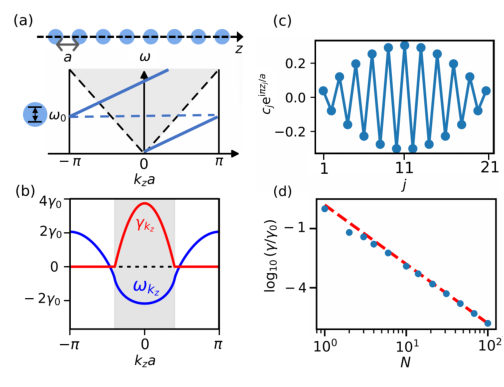
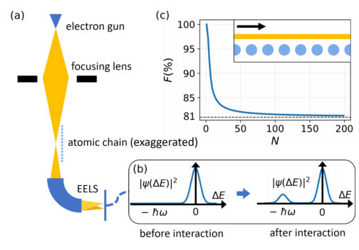
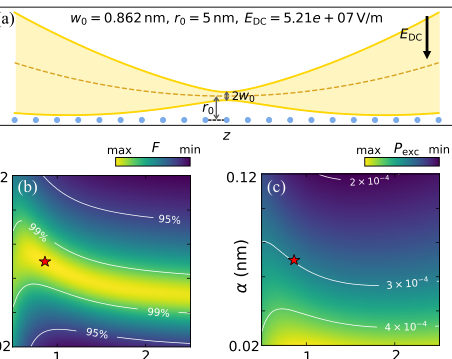
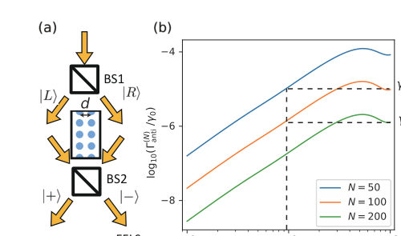
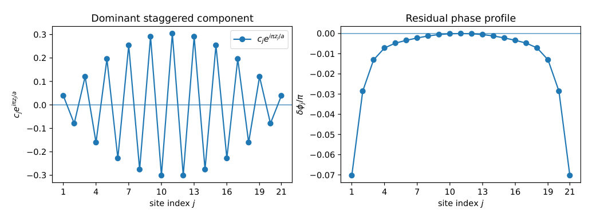
Summary. The paper demonstrates that free electrons can act as 'quantum writers' to prepare highly subradiant collective excitations in atomic chains. By leveraging the electron's momentum and trajectory, they overcome fundamental limitations faced by optical preparation methods. This technique achieves near-perfect fidelity even in deeply subwavelength regimes, opening new avenues for quantum memory and sensing.
Why it may be interesting. This work provides a concrete, high-fidelity method for engineering collective quantum states (superradiance/subradiance) that are otherwise inaccessible with standard propagating light fields, which is crucial for advanced quantum sensing and memory applications in AMO physics.
Main problem. The primary challenge is optically preparing the most subradiant eigenstate in a deeply subwavelength atomic chain because this state requires matching both an out-of-cone wave vector and a nonuniform spatial envelope.
Main result. A free electron passing through the array can overcome these constraints, achieving near-unity conditional fidelity ($F>99.5\%$) even at deep subwavelength spacings. Furthermore, path superposition in two chains yields stronger subradiance than single chains.
Method. The authors model the interaction using a scattering operator and utilize the free electron's velocity to set momentum while its trajectory shapes the excitation envelope for heralded preparation via EELS detection.
Model / system. The system is an ordered 1D array (chain) of two-level atoms. The physics involves collective eigenmodes described by a non-Hermitian Hamiltonian, and the interaction is treated perturbatively using electron scattering theory.
Key observables. Conditional fidelity ($F$), minimum decay rate ($\gamma_{ ext{min}}$), excitation probability ($P_{ ext{exc}}$), and the ratio of decay rates in two chains ($\Gamma(N)_{anti} / \gamma(N/2)_{min}$).
Important parameters / regimes. Deeply subwavelength spacing ($a = \lambda_0/20$), near-unity fidelity ($F > 99.5\%$), and the free electron's velocity ($v_0$).
Assumptions / limitations. Approximations include Born–Markov, non-recoil for the electron, and using Gaussian beam profiles with parabolic trajectories induced by DC electric fields.
Figures summary. Figures illustrate the comparison between photon and free-electron dispersion relations, showing how $\mathbf{q} = \omega_0/v_0$ enables access to subradiant modes. Later figures map out fidelity landscapes based on beam waist and trajectory curvature for optimized preparation.
Paper structure. The paper progresses from establishing the fundamental difficulty of state preparation in deep subwavelength regimes, introducing the free-electron writing mechanism using momentum/envelope matching, extending this protocol to two parallel chains via path superposition, and finally analyzing robustness against energy spread.
The most subradiant eigenstate of a finite subwavelength atomic chain in free space, protected by strongly suppressed radiative decay, offers a powerful resource for photon storage, quantum sensing, and many-body quantum optics. Yet its optical preparation is hindered by the simultaneous need to match a wave vector outside the light cone and a nonuniform envelope. Here, we show that a free electron can overcome these constraints: its velocity sets the imprinted wave vector, while the trajectory of the diffracting wave packet shapes the excitation envelope. This simultaneous momentum and envelope matching enables heralded preparation with near-unity conditional fidelity ($F>99.5\%$) even in a deeply subwavelength regime that is difficult to access with propagating free-space photons. We further show that a path-superposed free electron can excite an antisymmetric state in two closely spaced parallel chains, whose interchain destructive interference yields stronger subradiance than a single chain with the same total number of atoms. These results establish free electrons as quantum writers for collective excitations that are difficult to access with propagating optical fields.
Authors: Xiao Xue, Jurgen Dijkema, Tobias Bonsen, Patrick Harvey-Collard, Maximilian Rimbach-Russ, Sander L. de Snoo, Guoji Zheng, Amir Sammak, Giordano Scappucci, Lieven M. K. Vandersypen
Type: experiment · Category: other · PDF: https://arxiv.org/pdf/2608.03809v1
Analysis basis: full PDF text, analyzed in chunks
Topic relevance: 🔥 spintronics-quantum-optics interface 5/5 · 🔥 QC/QI experiment 4/5 · 🔥 analog quantum simulation 4/5 · 🔥 exotic spin models in light-matter 4/5 · correlated cavity matter 3/5 · quantum optics experiment 3/5 · correlated / nonlocal dissipation 2/5 · entanglement & information structure 2/5 · non-equilibrium dynamics 2/5 · Tavis-Cummings & cavity-many-emitter 1/5 · driven-dissipative phase transition 1/5 · methods for driven-dissipative 1/5 · quantum measurements 1/5
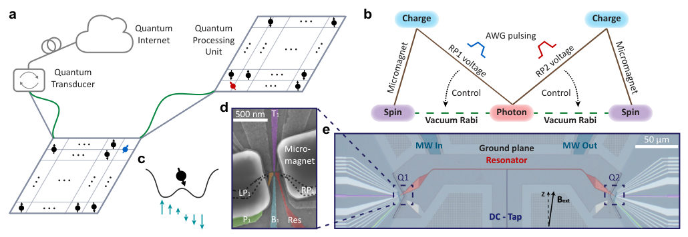
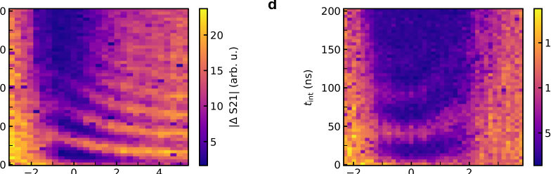
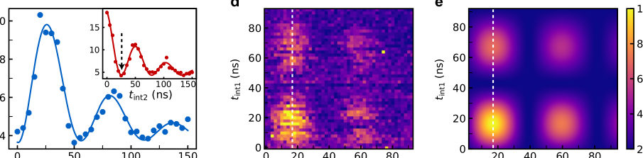
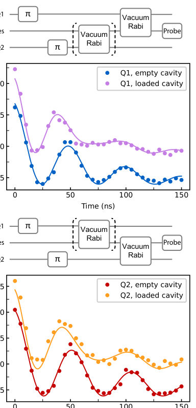
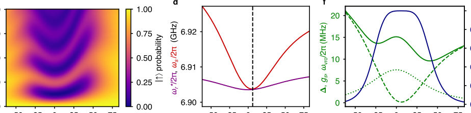
Summary. The paper reports on the realization of controlled light-matter interaction between two distant electron spin qubits mediated by a microwave cavity. By observing vacuum Rabi oscillations and implementing state transfer protocols, the authors demonstrate that single excitations can be coherently shuttled from one qubit to another via a photon. This work establishes fundamental building blocks for integrating solid-state quantum memories with photonic communication channels.
Why it may be interesting. This work is highly relevant as it directly addresses quantum networking concepts by realizing controllable entanglement generation (spin-photon-spin) using solid-state qubits coupled to superconducting cavities, a core area of cavity QED and open quantum systems research.
Main problem. The goal is to demonstrate controllable interaction between photons and distant electron spins using vacuum Rabi oscillations, thereby creating a functional interface between semiconductor spin qubits and photonic quantum links.
Main result. The authors successfully observed multiple vacuum Rabi oscillations and demonstrated the coherent transfer of single excitations from one spin qubit, through the cavity photon, to a second, spatially separated spin qubit.
Method. The experiment involves pulsing the system through resonant and dispersive regimes using voltage controls on double quantum dots coupled to a superconducting microwave cavity resonator.
Model / system. The physical platform is an engineered semiconductor-superconductor hybrid device containing two double quantum dots hosting single electron spin qubits ($ ext{Q1}$ and $ ext{Q2}$) coupled to a microwave cavity. The dynamics are governed by the interplay between spin, photon, and charge degrees of freedom.
Key observables. Vacuum Rabi oscillation frequency ($\Omega_{ ext{Rabi}}$), spin population probabilities ($P_\uparrow$), and the acceleration factor of the Rabi frequency when multiple excitations are present.
Important parameters / regimes. Interdot detuning ($\epsilon$), external magnetic field strength/orientation, cavity loss rates ($\gamma$), and coupling strengths ($g_s$).
Assumptions / limitations. The state transfer protocol requires both qubits to start in their ground states; deviations from ideal acceleration are attributed to energy loss and dephasing during the initial photon emission.
Figures summary. Figures show vacuum Rabi oscillation data vs. time/detuning, schematics of spin-photon-spin coupling, and plots illustrating accelerated oscillations corresponding to different initial photon numbers.
Paper structure. The work progresses from demonstrating basic single-qubit VROs, to implementing controlled state transfer between two distant spins via the cavity, and finally analyzing the underlying physics by studying the asymmetry of VROs versus detuning ramps.
Vacuum Rabi oscillations between a single photon and a single spin demonstrate the capability of harnessing light-matter interaction at the level of a single quantum of energy. Since the observation of strong spin-photon coupling in gate-defined quantum dots, probing this interaction in the time-domain has been a major objective. Here, we carefully engineer a device composed of two spatially separated double quantum dots hosting single electron spin qubits and a superconducting cavity to accommodate microwave photons. We observe multiple vacuum Rabi oscillations between each spin qubit and the cavity. By concatenating vacuum Rabi oscillations involving the two spins, an energy excitation in one qubit can be emitted as a photon and then transferred to the other qubit. When a single photon is emitted, the cavity is prepared in a Fock state, leading to an accelerated vacuum Rabi frequency. These results serve as building blocks not only in exploring light-matter interactions, but also in interfacing semiconductor spin qubits to photonic links.
Authors: Abhishek Kumar, Rushikesh A. Patil, Andreas W. W. Ludwig, Romain Vasseur
Type: theory · Category: statistical mechanics · PDF: https://arxiv.org/pdf/2608.02716v1
Analysis basis: full PDF text, analyzed in chunks
Topic relevance: 🔥 quantum measurements 5/5 · 🔥 entanglement & information structure 4/5 · 🔥 measurement-induced transitions 4/5 · non-equilibrium universality 3/5 · Keldysh / 2PI / non-Gaussian methods 2/5 · correlated / nonlocal dissipation 2/5 · driven-dissipative phase transition 2/5 · methods for driven-dissipative 1/5 · non-equilibrium dynamics 1/5
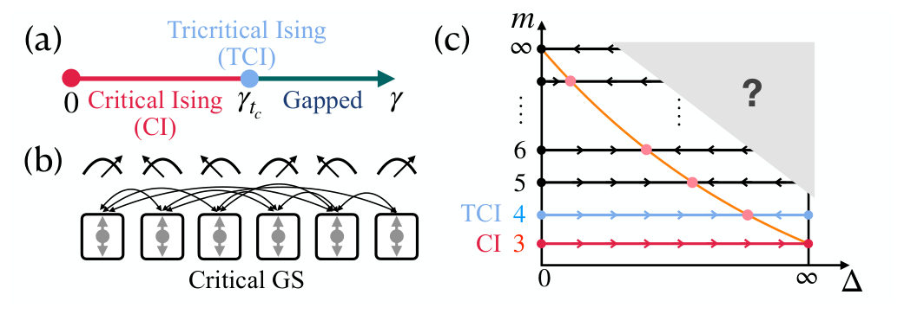
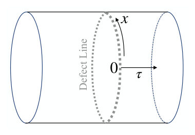
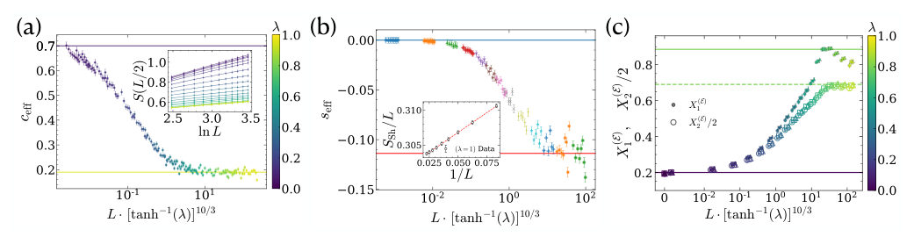
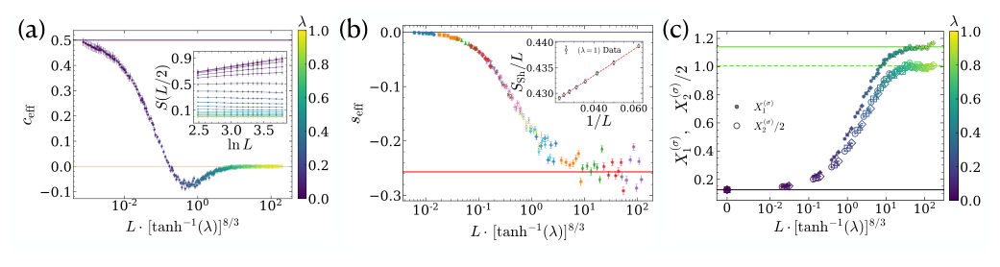
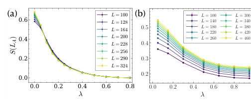
Summary. This paper investigates how weak measurements perturb the ground states of 1D quantum Ising models at critical and tricritical points. Using RG analysis, the authors show that intrinsic measurement randomness drives the system to novel 'measurement-dominated' fixed points. These findings reveal complex universal scaling behaviors inaccessible via standard unitary treatments.
Why it may be interesting. This work directly addresses how non-unitary processes (measurements) fundamentally alter the long-distance scaling laws predicted by standard critical theories, providing a rigorous framework for understanding decoherence effects on quantum criticality.
Main problem. The study characterizes universal crossovers occurring in post-measurement ensembles of ground states at quantum critical points, specifically investigating how intrinsic measurement randomness modifies standard critical properties.
Main result. For the critical Ising model, weak measurements lead to an RG flow towards a projective fixed point with area-law entanglement, while for the tricritical Ising model, evidence suggests a weak-measurement fixed point characterized by logarithmic entanglement.
Method. The analysis employs finite-size Renormalization Group (RG) crossover analyses and field theory formulations based on replica tricks to study the effects of measurement randomness.
Model / system. The system under investigation is the 1D quantum Ising Hamiltonian, examined at both critical (CI) and tricritical (TCI) points. Measurements are modeled as weak energy or spin measurements performed without post-selection, generating an ensemble state governed by the Born rule randomness.
Key observables. Entanglement effective central charge ($c_{ ext{eff}}$), effective Affleck-Ludwig boundary entropy ($ ext{seff}$), and signatures of multifractality from moments of measurement-averaged correlation functions.
Important parameters / regimes. The analysis compares regimes corresponding to zero measurement strength ($\lambda=0$), weak measurements, and projective measurements ($\lambda=1$).
Assumptions / limitations. The study is limited to explicit lattice protocols for CI and TCI, and the field theory description relies on specific Kraus operators defining the measurement process.
Figures summary. Figure 1 illustrates the model setup, showing the phase diagram of the O’Brien–Fendley chain at CI and TCI points, alongside schematics of weak measurements and RG flow. Other figures show representative fits for correlation functions in the tricritical Ising case.
Paper structure. The paper establishes the problem by defining measurement protocols on critical/tricritical systems. It then applies advanced theoretical tools like finite-size RG and replica field theory to calculate universal quantities, culminating in specific predictions for the infrared fixed points reached under different measurement strengths.
We study post-measurement ensembles of ground states of tricritical and critical 1D quantum Ising Hamiltonians subjected, respectively, to weak energy and spin measurements without post-selection. These measurements act as relevant perturbations about the unmeasured critical ground states. Using finite-size renormalization group (RG) crossover analyses, we characterize their universal properties through the entanglement effective central charge, effective Affleck-Ludwig boundary entropy, and signatures of multifractality from moments of measurement-averaged correlation functions. In both cases, we find evidence for "measurement-dominated" or "measurement-altered" fixed points governed by the underlying Born-rule randomness. For critical Ising, we find a direct RG flow to a projective-measurement fixed point with area-law entanglement, whereas for the tricritical Ising model, we find evidence for a weak-measurement fixed point with logarithmic entanglement. These results clarify the RG-flow structure of weakly measured multicritical Ising ground states and show how intrinsic measurement-induced randomness can generate complex and rich universal long-distance scaling behavior in the post-measurement ensembles, accessible to controlled analytical RG and numerical finite-size RG crossover analyses.
Authors: Yun-Hui He, Chang-Cheng Li, Xu Shen, Jing-Xu Bai, Xiao-Feng Shi, Lin Li, Yue-Chun Jiao, Jian-Ming Zhao
Type: theory · Category: other · PDF: https://arxiv.org/pdf/2608.02992v1
Analysis basis: full PDF text, analyzed in chunks
Topic relevance: 🔥 Rydberg arrays 5/5 · 🔥 analog quantum simulation 4/5 · Tavis-Cummings & cavity-many-emitter 2/5 · correlated cavity matter 2/5 · correlated / nonlocal dissipation 1/5 · driven-dissipative phase transition 1/5 · entanglement & information structure 1/5 · interference shaping light 1/5




Summary. This review provides a comprehensive overview of Rydberg-mediated nonlinear quantum optics, detailing how strong long-range interactions in highly excited atoms can be mapped onto photons. By utilizing phenomena like the Rydberg blockade effect within an EIT scheme, researchers can engineer effective photon-photon interactions at the single-photon level. This capability is crucial for developing next-generation quantum gates and networking components.
Why it may be interesting. This work is highly relevant as it details how exotic atomic properties (Rydberg blockade) are engineered to solve fundamental problems in quantum optics, bridging the gap between matter excitation physics and photonic quantum information processing.
Main problem. The primary challenge is realizing strong, controllable interactions between individual photons for quantum information processing, overcoming the inherent weakness of conventional optical nonlinearities.
Main result. Rydberg atoms enable effective photon-photon interactions at the single-photon level by mapping atomic interactions onto photonic degrees of freedom.
Method. The review synthesizes theoretical understanding of Rydberg electromagnetically induced transparency (EIT) and the blockade mechanism to model light-matter coupling.
Model / system. The system utilizes highly excited Rydberg atoms, whose strong long-range dipole-dipole ($1/R^3$) and van der Waals ($1/R^6$) interactions are leveraged. These interactions create a 'superatom' collective excitation regime.
Key observables. Effective photon–photon interaction strength, blockade radius ($R_b$), group index ($n_g$), and the efficiency of quantum state transfer.
Important parameters / regimes. Principal quantum number ($n$) which dictates scaling laws ($\propto n^2$ for dipole moment; $\propto n^{11}$ for $C_6$); atomic density ($ ho_N$).
Assumptions / limitations. The analysis often relies on the assumption that alkali atom scaling laws can be accurately modeled using an effective principal quantum number ($n^* = n - \delta_\ell$).
Figures summary. Figures illustrate the relative position of Rydberg optics among other platforms, energy level diagrams for different atoms (Cs vs H), and schematic representations of dipole-dipole/van der Waals interactions and the two-atom blockade effect.
Paper structure. The paper progresses by introducing fundamental principles, detailing key developments like single-photon engineering and quantum gates, providing a comprehensive overview of current state-of-the-art applications, and concluding with future prospects.
Rydberg atoms have emerged as a versatile platform for quantum optics due to their exaggerated properties, particularly their strong long-range interactions, which enable a new regime of light-matter interaction. By mapping the interactions between Rydberg atoms onto photons, effective photon-photon interactions can be realized at the single-photon level, thereby overcoming the intrinsic weakness of conventional optical nonlinearities. In this review, we first introduce the fundamental physical principles of Rydberg-mediated quantum optics, and then discuss some key developments, including single-photon engineering, photonic quantum gates, contactless nonlinear optics, and quantum entanglement, providing a comprehensive overview of the current state and prospects of this rapidly developing field.
Authors: Heechan Yi, Seong Chan Park, Kyoungchul Kong, Myeonghun Park
Type: theory · Category: other · PDF: https://arxiv.org/pdf/2608.02733v1
Analysis basis: full PDF text, analyzed in chunks
Topic relevance: 🔥 Tavis-Cummings & cavity-many-emitter 4/5 · Dicke superradiance 3/5 · correlated cavity matter 3/5 · entanglement & information structure 3/5 · analog quantum simulation 2/5 · correlated / nonlocal dissipation 2/5 · driven-dissipative phase transition 2/5 · methods for driven-dissipative 2/5 · QC/QI experiment 1/5 · exotic spin models in light-matter 1/5 · non-equilibrium dynamics 1/5 · non-equilibrium universality 1/5 · quantum optics experiment 1/5 · spintronics-quantum-optics interface 1/5
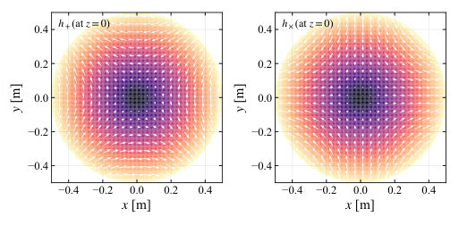
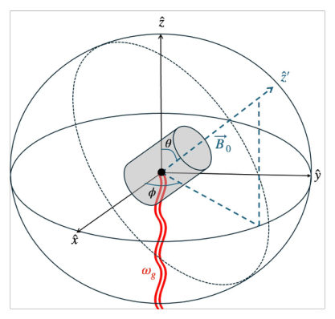
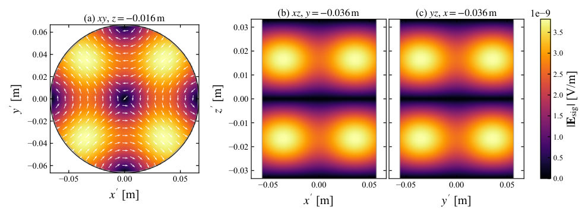
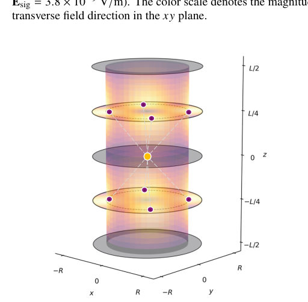
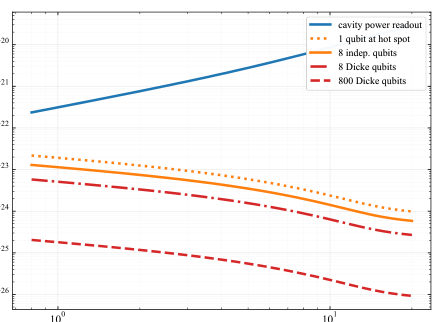
Summary. The paper proposes using superconducting transmon qubits as highly sensitive detectors for high-frequency gravitational waves. By leveraging the inverse Gertsenshtein effect and encoding the signal into an entangled Dicke state register, they achieve a collective enhancement that dramatically improves strain sensitivity compared to classical limits. This establishes a transformative quantum framework for next-generation GW searches in the GHz band.
Why it may be interesting. This work directly applies advanced concepts from cavity QED and many-body physics (Dicke states) to solve a fundamental problem in astrophysics/particle physics (GW detection), providing a concrete quantum advantage scaling law for experimental realization.
Main problem. Detecting high-frequency gravitational waves (HFGWs) which are too weak or oscillate at frequencies that evade traditional macroscopic interferometry methods.
Main result. The authors propose a quantum sensing framework where entanglement allows the strain sensitivity to scale as $h_{\min} \propto n_q^{-3/4}$, surpassing standard cavity limits by five orders of magnitude for 800 qubits.
Method. They utilize the inverse Gertsenshtein effect, coupling HFGWs to superconducting transmon qubits embedded in microwave cavities, and enhance sensitivity using entangled Dicke states.
Model / system. The system involves an array of superconducting transmon qubits acting as localized sensors within a resonant microwave cavity. The interaction is modeled via the effective four-current ($\mathbf{j}_{ ext{eff}}$) driven by the GW field, and the enhancement relies on mapping excitation parity using Dicke states.
Key observables. Strain sensitivity ($h_{\min}$), signal probability scaling ($\propto n^2$), and the characteristic spin-2 quadrupolar pattern of the induced electromagnetic field.
Important parameters / regimes. Qubit number ($n_q$), cavity quality factor ($Q$), operating frequency (GHz band), and the Planck-scale suppression inherent to gravitational interactions.
Assumptions / limitations. The analysis assumes an idealized global entangled register, neglecting relaxation effects, and focuses on direct GW–EM coupling while using a monochromatic approximation for steady-state solutions.
Figures summary. Figures illustrate the geometry of incoming GWs relative to the cavity axis and show the effective current ($\mathbf{j}_{ ext{eff}}$) induced by different polarizations ($h_+, h_ imes$).
Paper structure. The paper first establishes the physical problem (HFGW detection gap), then details the quantum sensing mechanism involving the inverse Gertsenshtein effect at field hot spots, and finally derives the collective enhancement scaling using entangled Dicke states.
High-frequency gravitational waves (HFGWs) provide a unique window into high-energy and early-universe physics, yet they evade traditional macroscopic interferometry. To bridge this detection gap, we propose a novel quantum-sensing paradigm utilizing superconducting transmon qubits embedded in resonant microwave cavities. Through the inverse Gertsenshtein effect, HFGWs propagating in a static magnetic field resonantly excite a cavity mode. By leveraging the characteristic spin-2 quadrupolar pattern of the induced electromagnetic field, we position qubits directly at the electric-field hot spots of the $\mathrm{TE}_{212}$ mode to act as localized sensors. Crucially, configuring this array as an entangled quantum register via symmetric Dicke states unlocks a fundamental scaling advantage: the signal probability scales quadratically with the qubit number, translating to a $h_{\min} \propto n_q^{-3/4}$ strain sensitivity scaling. We demonstrate that an idealized global register of 800 qubits reaches a strain sensitivity that surpasses standard macroscopic cavity-power limits by five orders of magnitude. Benchmarked against representative axion-haloscope parameters, this collective quantum enhancement decisively mitigates the profound Planck-scale suppression inherent to gravitational interactions, establishing a transformative framework for next-generation HFGW searches in the GHz band.
Authors: Fouad Essaadi, Yassine Oussarhan, Mohamed Ouhammou, Said Mouslih, Mohamed Jakha, Bouzid Manaut, Souad Taj
Type: theory · Category: other · PDF: https://arxiv.org/pdf/2608.03578v1
Analysis basis: full PDF text, analyzed in chunks
Topic relevance: 🔥 entanglement & information structure 4/5 · Keldysh / 2PI / non-Gaussian methods 3/5 · analog quantum simulation 3/5 · correlated cavity matter 3/5 · driven-dissipative phase transition 3/5 · methods for driven-dissipative 3/5 · Tavis-Cummings & cavity-many-emitter 2/5 · non-equilibrium dynamics 2/5 · correlated / nonlocal dissipation 1/5 · interference shaping light 1/5 · non-equilibrium universality 1/5
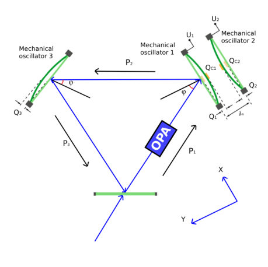
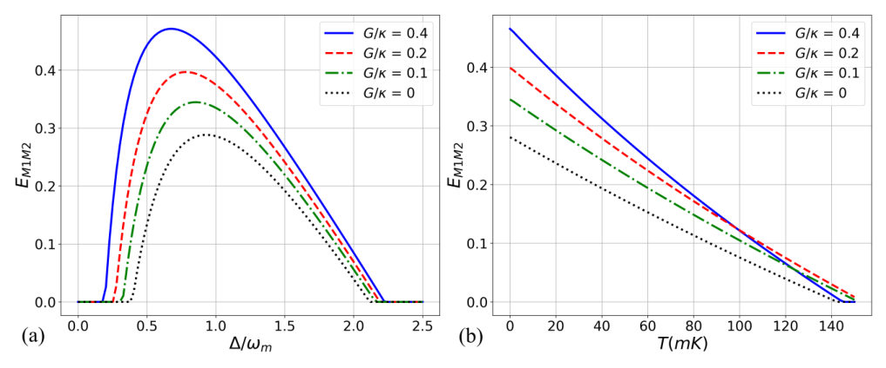
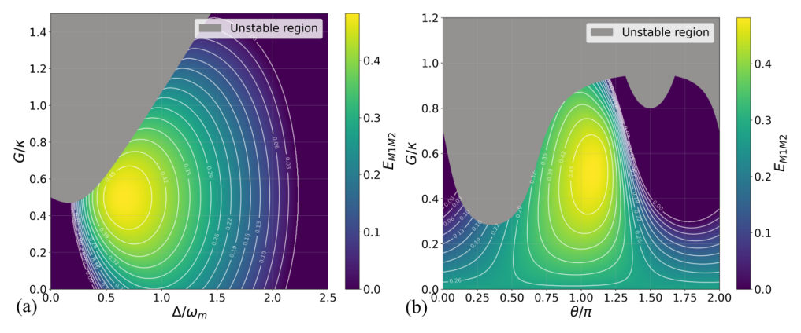
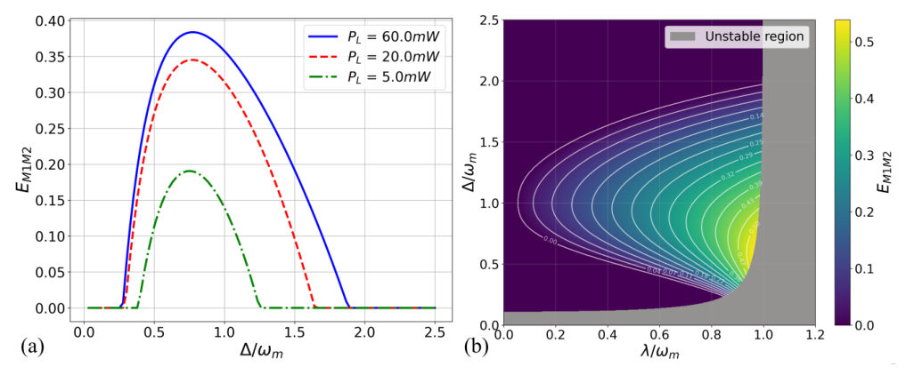
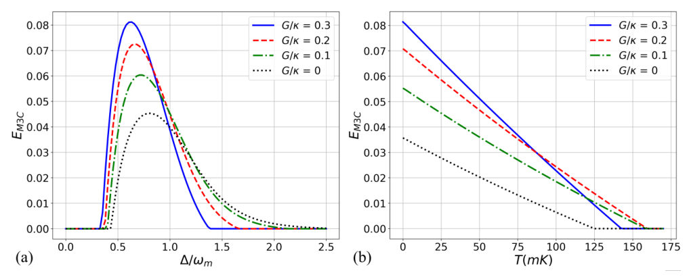
Summary. This paper analyzes the generation and enhancement of bipartite and tripartite entanglement in an electro-optomechanical ring cavity. It shows that while mechanical coupling is needed to create initial correlations, adding an OPA allows for significant amplification of these quantum states. The findings provide detailed parameter optimization guidelines but also warn about inherent trade-offs between maximizing entanglement and maintaining system stability.
Why it may be interesting. This work is highly relevant as it models an open quantum system where multiple physical mechanisms (electrostatics, cavity optics, parametric driving) interact to control multipartite entanglement, providing a blueprint for engineered quantum resources.
Main problem. The study investigates how quantum entanglement, both bipartite and tripartite, can be generated and subsequently enhanced within a complex electro-optomechanical ring cavity system.
Main result. The Coulomb interaction is necessary for initial entanglement generation, but the inclusion of an Optical Parametric Amplifier (OPA) acts as a powerful control mechanism to dramatically amplify these quantum correlations.
Method. The authors derived the system Hamiltonian and used Quantum Langevin Equations, linearizing them around steady-state solutions. Entanglement was quantified using the covariance matrix formalism, specifically logarithmic negativity and minimum residual contangle.
Model / system. The physical platform is a hybrid electro-optomechanical ring cavity containing two Coulomb-coupled mechanical resonators ($M_1, M_2$) and an embedded OPA. The system dynamics are governed by coupled optomechanical, charge-mediated (Coulomb), and parametric nonlinear interactions.
Key observables. Bipartite entanglement quantified by logarithmic negativity; Tripartite entanglement quantified by minimum residual contangle ($\mathcal{R}_{\min}^{ au}$).
Important parameters / regimes. OPA gain ($G$), optical phase ($ heta$), laser detuning ($\Delta$), Coulomb coupling strength ($\lambda$), and system temperature ($T$).
Assumptions / limitations. The analysis relies on linearizing the quantum Langevin equations around steady-state solutions, assuming Gaussian fluctuations are dominant.
Figures summary. Figures illustrate entanglement measures (e.g., $ ext{EM}_{3C}$) as functions of detuning ($\Delta/\omega_m$), OPA gain ratio ($G/\kappa$), and Coulomb coupling strength ($\lambda/\omega_m$).
Paper structure. The paper follows a progression from defining the full Hamiltonian and deriving QLEs, through steady-state analysis and linearization to obtain the drift matrix $A$, culminating in the calculation of the covariance matrix via the Lyapunov equation to quantify entanglement.
This study investigates the generation and enhancement of quantum entanglement in an electro-optomechanical ring cavity system. The setup integrates two Coulomb-coupled mechanical resonators, which serve as the fundamental mechanism for the generation of bipartite and tripartite entanglement via charge mediated coupling. We then demonstrate the significant enhancement of this entanglement via a nonlinear parametric drive (an optical parametric amplifier, OPA), which injects a controllable nonlinearity into the cavity. We derive the system's Hamiltonian and the corresponding quantum Langevin equations, which are linearized around steady-state solutions to analyze Gaussian quantum fluctuations. Employing the covariance matrix formalism, we quantify bipartite entanglement via logarithmic negativity and tripartite entanglement via the minimum residual contangle. Our results unequivocally show that while the Coulomb interaction is indispensable for creating entanglement, the OPA acts as a powerful control tool, dramatically amplifying the degree of quantum correlations for all subsystems. We find that the strength of entanglement is highly sensitive to several parameters and can be optimized through the strategic selection of the OPA's gain and phase, the laser detuning, and the input power. A key finding is the existence of a trade-off, where parameters that maximize entanglement also constrain the stable operating regime of the system. Furthermore, thermal noise is shown to progressively degrade all quantum correlations, underscoring the necessity for low-temperature operation. These findings provide comprehensive guidance for parameter optimization, outlining a clear path from generation to enhancement, and highlight the potential of such hybrid systems as versatile platforms for controlling multipartite entanglement in quantum technologies.
Authors: Orjan Ameye, Jakob Koenig, Clinton Potts, Oded Zilberberg, Gary Steele
Type: both · Category: other · PDF: https://arxiv.org/pdf/2608.03871v1
Analysis basis: full PDF text, analyzed in chunks
Topic relevance: 🔥 methods for driven-dissipative 4/5 · correlated cavity matter 3/5 · driven-dissipative phase transition 3/5 · quantum optics experiment 3/5 · Keldysh / 2PI / non-Gaussian methods 2/5 · Tavis-Cummings & cavity-many-emitter 2/5 · non-equilibrium universality 2/5 · analog quantum simulation 1/5 · correlated / nonlocal dissipation 1/5 · entanglement & information structure 1/5 · interference shaping light 1/5 · non-equilibrium dynamics 1/5 · quantum measurements 1/5
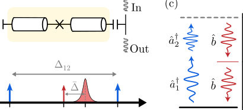
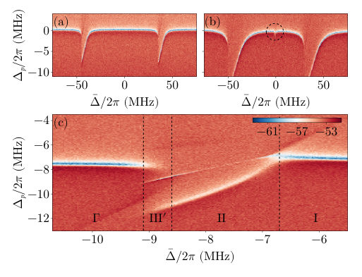
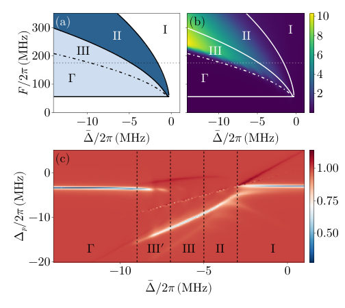
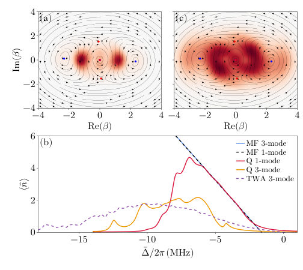
Summary. The paper explores parametric resonance in a superconducting Kerr oscillator using two microwave tones. It demonstrates that conventional single-mode theoretical reductions fail quantitatively because they ignore pump fluctuations. By employing a full three-tone quantum description, the authors accurately model phenomena like the AC Stark shift and show how quantum noise fundamentally alters expected classical behavior in the few-photon regime.
Why it may be interesting. This work is highly relevant as it pushes beyond standard mean-field approximations in driven-dissipative systems, providing concrete evidence for how quantum noise fundamentally renormalizes macroscopic predictions near the quantum-classical crossover point.
Main problem. The study investigates degenerate parametric resonance in a Kerr oscillator driven by two microwave tones, specifically testing the validity of simplified theoretical models when operating in the few-photon regime.
Main result. A full three-tone quantum description is necessary to accurately reproduce experimental observables, showing that neglecting pump fluctuations leads to severe underestimation of effects like the AC Stark shift.
Method. The authors employ transmission spectroscopy measurements combined with theoretical modeling comparing mean-field approximations against full Lindblad master equation simulations for the coupled system.
Model / system. The physical platform is a Josephson-junction Kerr oscillator driven by two coherent microwave tones, modeled using an effective three-mode Hamiltonian and governed by a Lindblad master equation.
Key observables. Transmission spectrum $|S_{21}|$, AC Stark shift, stationary-state photon number $\langle\hat{b}^\dagger\hat{b} angle$, and phase-space distributions of the cavity mode.
Important parameters / regimes. The few-photon limit is crucial, where quantum fluctuations dominate dissipation; the ratio $K/\kappa$ (single-photon Kerr shift vs. linewidth) dictates the failure of mean-field theory.
Assumptions / limitations. The primary assumption challenged is the validity of single-mode reduction; the work overcomes this by using a full three-tone quantum description, though computational limits restrict simulations to small photon numbers.
Figures summary. Figures show measured transmission spectra revealing parametric signatures and AC Stark effects. Theoretical figures compare phase diagrams and stationary photon number predictions from mean-field versus full quantum treatments, highlighting the renormalization of semiclassical lobes.
Paper structure. The paper establishes the physical setup and measurement techniques (transmission spectroscopy) before developing a theoretical comparison: first showing the failure of single-mode reduction, then presenting the successful quantitative agreement using the full three-tone quantum description.
Multi-tone external driving offers a route to parametric physics without directly modulating the device. However, the validity of the parametric response in the few-photon regime remains underexplored. Here, we apply two coherent microwave tones to a Josephson-junction Kerr oscillator and stimulate degenerate parametric downconversion via four-wave mixing. Using transmission spectroscopy, we observe that the response retains the qualitative semiclassical Kerr parametric oscillator structure, including its instability lobe and bistable phase-space topology. Interestingly, we demonstrate that a conventional single-mode reduction fails to capture the system quantitatively: the predicted AC Stark shift is severely underestimated, and the reported distributions might not be fully physical when the single-photon Kerr shift $K$ exceeds the cavity linewidth $κ$. Instead, we show that a full three-tone quantum description accurately reproduces the experimental observables. There, quantum fluctuations of the drive tones become dynamically dominant over dissipation, and all three interacting tones operate in a deep few-photon limit where the expected semiclassical macroscopic lobes undergo fundamental renormalization due to profound mixing with quantum variance. Our results establish two-tone-driven Kerr oscillators as potential parametric amplifiers and open new horizons to explore the quantum-to-classical crossover in driven-dissipative circuits.
Authors: Nika Teran, Benjamin Whitefield, Nicholas Sloane, Kenji Watanabe, Takashi Taniguchi, Igor Aharonovichand Mehran Kianinia
Type: experiment · Category: quantum information and computing · PDF: https://arxiv.org/pdf/2608.03090v1
Analysis basis: full PDF text, analyzed in chunks
Topic relevance: 🔥 QC/QI experiment 4/5 · 🔥 spintronics-quantum-optics interface 4/5 · exotic spin models in light-matter 3/5 · quantum optics experiment 3/5 · Tavis-Cummings & cavity-many-emitter 2/5 · quantum measurements 2/5 · analog quantum simulation 1/5 · correlated / nonlocal dissipation 1/5 · correlated cavity matter 1/5 · driven-dissipative phase transition 1/5 · interference shaping light 1/5
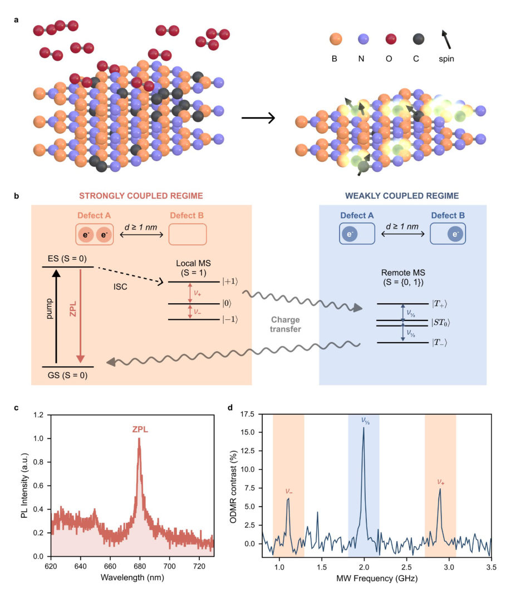
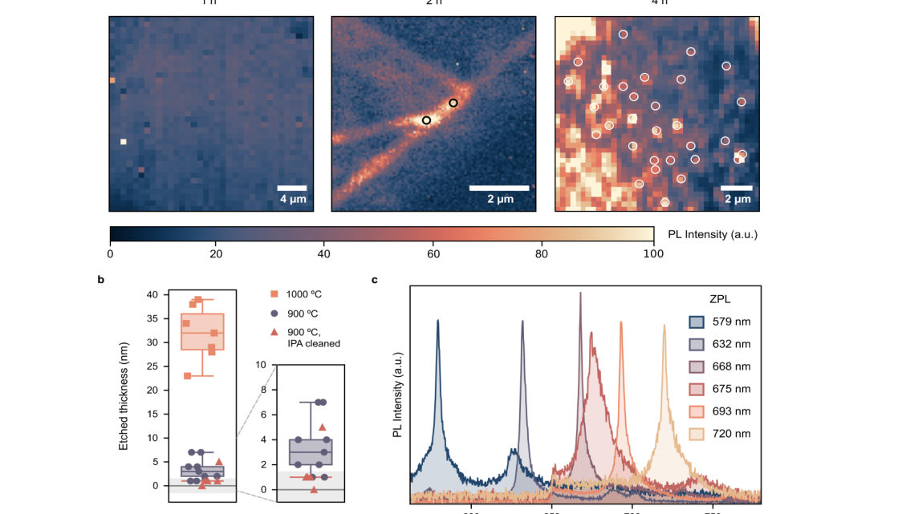
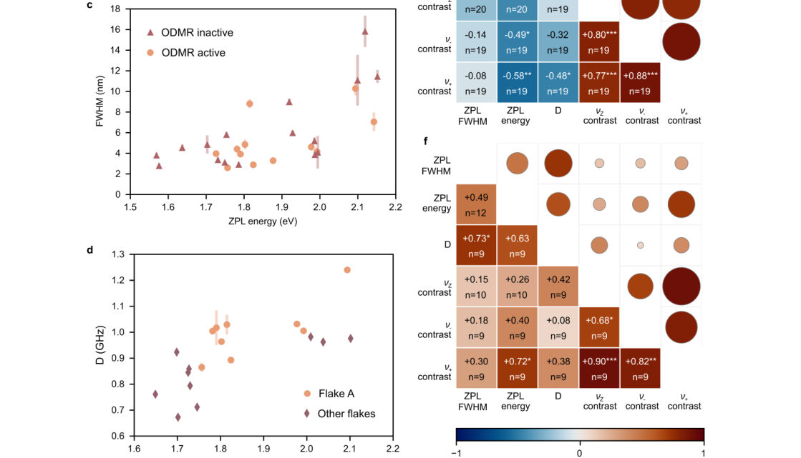
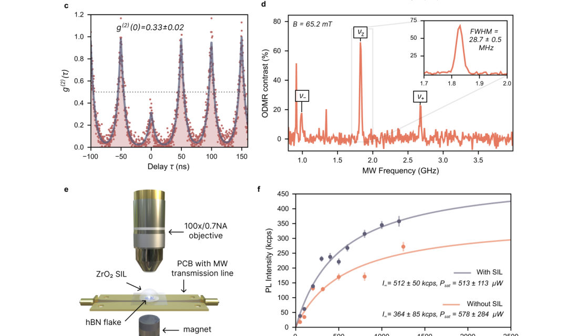
Summary. The research investigates using carbon-doped hBN defects as solid-state quantum emitters for sensing applications. By correlating optical properties like ZPL energy with spin parameters like D, the authors found that while the spin state correlates strongly with optical features, the ODMR contrast does not. This suggests distinct physical origins for the spin and optical responses, guiding deterministic emitter design.
Why it may be interesting. This work directly addresses the engineering challenge of creating reliable quantum light sources by decoupling the mechanisms governing spin coherence (for qubits) from those governing photon emission, which is crucial for integrated quantum devices.
Main problem. The study aims to correlate spin and optical properties of quantum emitters in hBN for use in near-surface quantum sensing.
Main result. A direct correlation was found between the zero-field splitting parameter D and the ZPL energy, but the ODMR contrast showed no such correlation with these optical parameters.
Method. The researchers synthesized spin-complex defects in carbon-doped hBN flakes and characterized them using techniques including ODMR, measurement of ZFS parameters, and photon collection enhancement via solid immersion lenses.
Model / system. The physical system is optically addressable spin defects (hypothesized as Donor-Acceptor Pairs) within hexagonal boron nitride (hBN). The model involves analyzing different coupling regimes for the defect spins to understand their optical emission pathways.
Key observables. Zero-Field Splitting parameter D, Zero-Phonon Line (ZPL) energy and FWHM, ODMR contrast ($ u u\pm$ and $ u u^{1/2}$), and single-photon emission ($g^{(2)}(0)$).
Important parameters / regimes. Optimal annealing conditions ($900^\circ ext{C}$ for 4h); correlation coefficients (Pearson $r$, Spearman $ ho$).
Assumptions / limitations. The ODMR signal depends on coupling to a remote defect B, making it independent of the DAP structure's optical properties.
Figures summary. Figures illustrate the spin complex model, optimization of annealing conditions for high emitter density, and correlation matrices comparing ZPL properties, D, and ODMR contrast across different emitters.
Paper structure. The paper progresses from establishing the physical platform (hBN defects) to synthesizing them under optimized conditions. It then presents statistical analysis correlating various measured parameters (ZPL vs. D vs. Contrast), culminating in a mechanistic conclusion about the origin of spin versus optical properties.
Optically addressable spin defects in hexagonal boron nitride (hBN) are well suited for near-surface quantum sensing. They offer bright, wavelength-tunable single-photon emission with high optically detected magnetic resonance (ODMR) contrast at room temperature. Here we controllably synthesise a high density of spin-complex defects in carbon-doped hBN flakes. We find that the zero-field splitting parameter D is directly correlated with the zero-phonon line of an emitter, while the ODMR contrast shows no such correlation. We further analyse an individual narrowband defect showing 68% ODMR contrast and enhance its photon collection by ~40% using a solid immersion lens. By advancing both the practical synthesis of the spin complexes and the understanding of their microscopic origin, our results move us toward the deterministic creation of ODMR-active quantum emitters
Authors: Mengjie Yang, Alexander N. Poddubny, Ching Hua Lee
Type: theory · Category: disordered systems and neural networks · PDF: https://arxiv.org/pdf/2608.02746v1
Analysis basis: full PDF text, analyzed in chunks
Topic relevance: 🔥 analog quantum simulation 4/5 · 🔥 non-equilibrium universality 4/5 · correlated / nonlocal dissipation 3/5 · driven-dissipative phase transition 3/5 · methods for driven-dissipative 3/5 · non-equilibrium dynamics 2/5 · Keldysh / 2PI / non-Gaussian methods 1/5 · Kondo & dissipative impurity 1/5 · entanglement & information structure 1/5
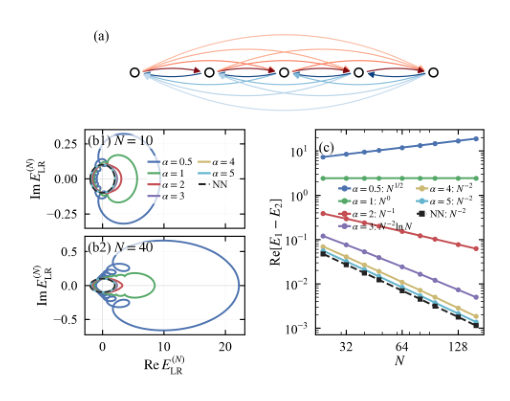
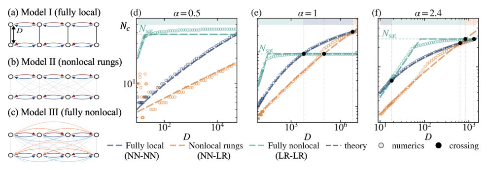
Summary. This theoretical work analyzes spectral transitions in coupled non-Hermitian lattices by incorporating long-range hopping interactions. The authors demonstrate that these long-range couplings reorganize the critical behavior from conventional logarithmic scaling to a hierarchy including algebraic and scale-covariant regimes. This offers a generalized framework for understanding stability thresholds in complex quantum systems.
Why it may be interesting. The framework provides a platform-independent understanding of how nonlocality fundamentally alters stability thresholds in open quantum systems, which is highly relevant for designing robust topological or photonic circuits.
Main problem. The study investigates how long-range hoppings fundamentally reorganize critical spectral behavior in non-Hermitian lattices, moving beyond conventional scaling laws.
Main result. Long-range hoppings induce a hierarchy of distinct critical behaviors, including an algebraic onset and a novel scale-covariant regime, which systematically removes physical length scales like the skin depth.
Method. The analysis involves comparing three coupled ladder configurations (Models I, II, III) by analyzing spectral transitions using both finite-size Bloch symbols and time/frequency domain measurements of eigenvalue splitting.
Model / system. The system models are non-Hermitian lattices formed by two coupled chains exhibiting the Non-Hermitian Skin Effect. The Hamiltonian incorporates nearest-neighbor (NN) and long-range (LR) hopping terms, allowing for three distinct coupling geometries (local/long-range legs and rungs).
Key observables. Critical length scale ($N_c$), spectral transitions (real to complex energy spectra), relative imaginary splitting ($\Delta ext{Im}$ or $\Gamma_{\max}$).
Important parameters / regimes. Transverse separation ($D$), power-law decay exponent ($\alpha$), and non-reciprocity parameter ($\gamma$).
Assumptions / limitations. The analysis assumes Open Boundary Conditions (OBCs) throughout, and for analytical tractability, the full distance-dependent coupling kernel is sometimes approximated by a constant-kernel form.
Figures summary. Figures illustrate single-chain Bloch spectra and compare $N_c$ vs. $D$ plots for three different nonlocal ladder configurations (Model I, II, III), demonstrating the differing scaling laws.
Paper structure. The paper progresses by defining the physical models (three coupled chains) and then systematically analyzing the critical length scale ($N_c$) associated with spectral transitions using multiple diagnostic tools (Bloch symbols, time/frequency domain measurements). The comparison across different coupling types reveals the hierarchy of scaling laws.
Spectral transitions in non-Hermitian lattices often arise from the competition between non-reciprocal skin accumulation and inter-component hybridization. In short-range systems formed by two coupled chains, this competition conventionally leads to the logarithmic critical-length law $N_c\sim\ln D$, where $D$ is the transverse separation between the chains. Here we show that long-range hoppings fundamentally reorganizes this critical behavior, producing a hierarchy of distinct scaling laws. When only the hybridization couplings are power-law decaying with exponent $α$, the onset becomes algebraic, $N_c\sim D^{α/3}$. When the hoppings within each chain are themselves also power-law decaying, in addition to the hybridization couplings, the system enters a scale-covariant regime for $α<2$, in which the criticality threshold equation depends only on the system aspect ratio $N_c/D$. At $α=2$ and beyond, this regime is followed by a marginal logarithmically corrected and algebraically corrected regimes, respectively. We identify two new non-local mechanisms that enable this unconventional critical hierarchy: a nonanalytic band-edge dispersion from long-range intra-chain hoppings, and parity-mixing hybridization induced by non-reciprocity. Our results show that nonlocality systematically removes the physical length scales i.e. skin depth underlying conventional critical non-Hermitian skin behavior, offering a platform-independent framework testable in programmable topoelectrical circuits, photonic lattices and digital quantum simulators.
Authors: Victor Velasco, Gabriele Spada, Giovanni Midei, Andrea Perali, Luis A. Peña Ardila
Type: theory · Category: quantum gases · PDF: https://arxiv.org/pdf/2608.03665v1
Analysis basis: full PDF text, analyzed in chunks
Topic relevance: 🔥 non-equilibrium dynamics 4/5 · Keldysh / 2PI / non-Gaussian methods 3/5 · Kondo & dissipative impurity 3/5 · analog quantum simulation 3/5 · non-equilibrium universality 3/5 · driven-dissipative phase transition 2/5 · correlated / nonlocal dissipation 1/5 · methods for driven-dissipative 1/5 · scars & prethermalization 1/5
Summary. The paper analyzes attractive Bose polarons in 2D Bose gases, using them as spectroscopic tools to measure finite-temperature fluctuations. By combining advanced scattering theory with PIMC simulations, the authors predict a nonmonotonic temperature dependence for the polaron energy due to phonon dressing effects induced by finite size.
Why it may be interesting. This research directly addresses non-equilibrium dynamics and critical behavior in low-dimensional quantum systems, which is central to modern AMO physics involving ultracold atoms.
Main problem. The study investigates how quantum impurities act as sensitive probes for finite-temperature fluctuations, phonon dressing effects, and bound-state physics within two-dimensional Bose gases.
Main result. The impurity quasiparticle energy exhibits a nonmonotonic temperature dependence because the thermal population of resolved phonon modes competes with condensate depletion. This confirms attractive polarons' utility in probing 2D gas dynamics.
Method. A hybrid theoretical approach combining finite-temperature many-body scattering theory (e-NSCT) with input from Path-Integral Monte Carlo (PIMC) simulations is employed for analysis.
Model / system. The system models a single attractive impurity immersed in a weakly interacting, finite two-dimensional Bose gas. The physics incorporates effects arising from the finite size imposing an infrared momentum cutoff ($k_{min}$).
Key observables. Impurity quasiparticle energy, condensate fraction $n_0(T)$, and polaron energy dependence on temperature.
Important parameters / regimes. Finite-size effect (IR cutoff $k_{min}$), characteristic temperature $\Theta_c$ (Bogoliubov validity boundary), and the coupling strength ($g$).
Assumptions / limitations. The Bogoliubov description is treated as a low-energy approximation, valid only below the finite-size crossover temperature $\Theta_c$. The analysis relies on treating the system perturbatively in the weak coupling limit.
Figures summary. Figure 1(a) shows the condensate fraction decreasing with T; Figure 1(b) shows correlation functions. Other figures compare polaron splitting results from continuum vs. discrete calculations.
Paper structure. The work builds theory by establishing the Hamiltonian and utilizing Bogoliubov/e-NSCT frameworks, incorporating PIMC results for $n_0(T)$ to analyze the impurity energy across different thermal regimes defined by the finite-size cutoff.
Two-dimensional quantum gases provide a distinctive setting in which enhanced thermal fluctuations, finite-size effects, and two-body bound-state formation are intrinsically intertwined. In this work, we study a single attractive impurity immersed in a finite, weakly interacting two-dimensional Bose gas, where finite size stabilizes a nonzero condensate fraction by introducing an infrared momentum scale, thereby enabling a Bogoliubov description of the bath. Using a hybrid approach that combines finite-temperature many-body scattering theory with input from path-integral Monte Carlo, we analyze the impurity quasiparticle energy across the condensate and normal regimes. The infrared scale generates a phonon-activation temperature below which the impurity energy remains nearly temperature independent. Once the resolved phonon modes become thermally populated, their contribution competes with condensate depletion, producing a nonmonotonic temperature dependence of the polaron energy. These results suggest that attractive Bose polarons may serve as sensitive probes of finite-size thermal fluctuations, phonon dressing, and bound-state physics in low-dimensional Bose gases.
Authors: Janis Nötzel, Kiran Adhikari
Type: theory · Category: quantum information and computing · PDF: https://arxiv.org/pdf/2608.02921v1
Analysis basis: full PDF text, analyzed in chunks
Topic relevance: 🔥 quantum measurements 4/5 · interference shaping light 3/5 · measurement-induced transitions 3/5 · quantum optics experiment 3/5 · QC/QI experiment 2/5 · analog quantum simulation 1/5 · correlated cavity matter 1/5 · driven-dissipative phase transition 1/5 · entanglement & information structure 1/5 · methods for driven-dissipative 1/5 · non-equilibrium dynamics 1/5

Summary. This work tackles Blind Source Separation for thermal light by proposing a novel, sensing-assisted method implemented in a programmable photonic interferometer. This quantum approach estimates and suppresses optical correlations locally, achieving measurement precision superior to classical heterodyne detection methods, particularly when photon numbers are low.
Why it may be interesting. It demonstrates how fundamental concepts of quantum measurement theory (like achieving the Holevo bound) can be directly mapped onto physical hardware (photonic interferometers) to solve complex signal processing tasks like BSS.
Main problem. The paper addresses Blind Source Separation (BSS) for independent thermal optical sources mixed by an unknown passive linear transformation.
Main result. A proposed sensing-assisted quantum method achieves asymptotically optimal estimation bounds, showing a significant advantage over conventional heterodyne tomography, especially in the weak-light regime.
Method. The authors propose an iterative, sensing-based approach implemented within a programmable interferometer mesh to perform an in situ Jacobi diagonalization of the input multimode correlation matrix.
Model / system. The system involves thermal light sources whose output state is mixed by an unknown passive linear transformation $U$. The physical platform modeled is a photonic circuit utilizing tunable Mach-Zehnder interferometers as unit cells.
Key observables. Covariance matrices, correlation matrices, and quantum measurement outcomes like photon number differences ($\{P^{NDAB}_t\}$).
Important parameters / regimes. Thermal energies ($N_1, \ldots, N_K$), the weak-light regime (low photon numbers), and parameters defining the mixing transformation $( heta, \phi)$.
Assumptions / limitations. The theoretical framework relies on quantum multiparameter estimation theory, specifically comparing performance against the Holevo Cramér–Rao bound.
Paper structure. The paper develops the problem formulation using quantum multiparameter estimation bounds, proposes the sensing-assisted method via interferometer unit cells for iterative diagonalization, and contrasts this with classical heterodyne tomography approaches.
Using the framework of quantum multiparameter estimation, we study the problem of separating independent thermal optical sources mixed by an unknown passive linear transformation, which is known as blind source separation in signal processing. We propose a sensing-assisted method that iteratively estimates and suppresses optical correlations directly within the unit cells of a programmable interferometer. We show that collective quantum measurements exhibit a substantial advantage over conventional detection methods by constructing collective measurements that asymptotically achieve the Holevo Cramér--Rao bound in a unit cell of the interferometer for the respective sub-problem. By systematically arranging multiple such cells in a photonic mesh, our proposal implements an in situ Jacobi diagonalization of the input multimode correlation matrix. We contrast our method with a conventional approach where heterodyne detection is used to reconstruct the full covariance matrix and subsequently diagonalize it on a classical computer. A comparison with this heterodyne tomography approach shows that our sensing-based method is particularly advantageous in the weak-light regime.
Authors: Kohei Ohgane, Lev Vidmar
Type: theory · Category: statistical mechanics · PDF: https://arxiv.org/pdf/2608.02744v1
Analysis basis: full PDF text, analyzed in chunks
Topic relevance: 🔥 non-equilibrium dynamics 4/5 · 🔥 scars & prethermalization 4/5 · non-equilibrium universality 3/5 · analog quantum simulation 2/5 · driven-dissipative phase transition 2/5 · Frenkel-Kontorova 1/5 · Keldysh / 2PI / non-Gaussian methods 1/5 · correlated / nonlocal dissipation 1/5 · entanglement & information structure 1/5 · exotic spin models in light-matter 1/5 · methods for driven-dissipative 1/5
Summary. The paper proposes a two-parameter ansatz to theoretically describe the continuous transition from standard Eigenstate Thermalization Hypothesis (ETH) behavior to its complete breakdown. By distinguishing between 'fading' and 'trapped' ergodicity mechanisms, it offers a unified framework for understanding how quantum systems lose or regain thermalizing properties in finite sizes.
Why it may be interesting. This work provides crucial theoretical machinery ($ heta, \lambda$ parameters) to classify non-equilibrium dynamics in interacting quantum systems, which is fundamental for understanding thermalization beyond simple ETH predictions.
Main problem. The paper addresses the lack of a general theory describing the continuous transition between conventional Eigenstate Thermalization Hypothesis (ETH) and its complete breakdown in isolated quantum many-body systems.
Main result. They introduce a two-parameter ansatz that successfully unifies and distinguishes two distinct mechanisms for ETH violation: fading ergodicity and trapped ergodicity, confirming trapped ergodicity in tested models.
Method. The analysis involves developing a theoretical ansatz $\xi(h, L) = heta(h)L + \lambda(h)$ to model the scaling of observable variance ($\sigma^2$) with system size ($L$).
Model / system. The framework is tested on spin-1/2 $J_1$-$J_2$ Heisenberg chains incorporating both on-site disorder and linear potentials (Stark model).
Key observables. Variance ($\sigma^2$) of diagonal matrix elements, ergodization length ($\xi(h, L)$), and the parameters $ heta(h)$ and $\lambda(h)$.
Important parameters / regimes. Model parameter $h$ (disorder strength), system size $L$, and the characteristic energy scale $\eta_0$.
Assumptions / limitations. The core assumption is that ETH violation can be parameterized by a linear combination of $L$ and an additive term, allowing for the separation of different physical mechanisms.
Figures summary. Figures illustrate the expected scaling behavior of $\sigma^2$ versus model parameter $h$, distinguishing between conventional ETH, fading ergodicity, and trapped ergodicity regimes.
Paper structure. The paper first establishes the theoretical need for a continuous interpolation theory for ETH violation. It then introduces the two-parameter ansatz to mathematically distinguish between the physical scenarios of fading and trapped ergodicity before applying this framework to numerical results on spin chains.
The eigenstate thermalization hypothesis (ETH) provides the prevailing framework for understanding quantum thermalization and ergodicity in isolated many-body systems. Yet, no general theory describes the continuous onset of ETH violation between the conventional ETH and its complete breakdown. Here, we introduce a two-parameter ansatz for the ETH violation that unifies and distinguishes two mechanisms: fading ergodicity and trapped ergodicity. While fading ergodicity captures the established route to ergodicity breaking, trapped ergodicity describes a distinct scenario in which ETH is violated in finite systems but restored in the thermodynamic limit. We test this framework in the spin-1/2 $J_1$-$J_2$ chains with on-site disorder and linear potential. In both cases, we find that the observed ETH violation is consistent with trapped ergodicity.
Authors: Henry Froland, Dorota M. Grabowska, Sebastian Grieninger, Jeremy Hartse, Anne L. Lashbrook, Zhiyao Li, Ziyuan Li, Sarah J. M. Powell, Martin J. Savage, Xiaojun Yao, Nikita A. Zemlevskiy
Type: theory · Category: quantum information and computing · PDF: https://arxiv.org/pdf/2608.02944v1
Analysis basis: full PDF text, analyzed in chunks
Topic relevance: 🔥 quantum measurements 4/5 · analog quantum simulation 3/5 · measurement-induced transitions 3/5 · methods for driven-dissipative 3/5 · non-equilibrium dynamics 2/5 · Keldysh / 2PI / non-Gaussian methods 1/5 · correlated / nonlocal dissipation 1/5 · driven-dissipative phase transition 1/5 · entanglement & information structure 1/5 · exotic spin models in light-matter 1/5
Summary. This paper explores using sparse error detection techniques to make quantum simulations of lattice gauge theories feasible with current, noisy quantum computers. By embedding models like the Schwinger model into specific stabilizer codes and implementing periodic syndrome measurements, the authors show that systematic error reduction can significantly boost observable accuracy. This suggests a path toward applying minimal fault tolerance in high-energy physics simulations.
Why it may be interesting. It directly addresses the practical challenge of running complex quantum field theory simulations on noisy near-term hardware by proposing a resource-efficient fault tolerance mechanism (sparse detection).
Main problem. The work investigates how sparse error detection can be utilized to perform fault-tolerant quantum simulations of lattice gauge theories.
Main result. Sparse error detection shows potential for improving observable estimation accuracy in near-term quantum simulations, systematically driving errors down towards the code's noise floor.
Method. The authors simulate time evolution using specific quantum error-correcting codes (Iceberg and Hypercube families) while incorporating sparse syndrome measurements and physics-aware postselection.
Model / system. The primary model is the lattice Schwinger model, embedded into stabilizer codes like [[N+2, N, 2]] or [[2^N, N, 2]]. The simulation uses the axial gauge for Hamiltonian construction.
Key observables. Observable estimation accuracy; systematic error reduction over time; logical error rates.
Important parameters / regimes. Realistic near-term noise rates ($p_2$); codeblock size (large blocks are advantageous); number of error detection rounds.
Assumptions / limitations. The analysis assumes that incorporating minimal fault tolerance layers enhances performance, and postselection is used to eliminate leading order bit-flip errors.
Paper structure. The paper examines the utility of sparse error detection for lattice gauge theory simulations, comparing different code families and demonstrating improved accuracy under realistic noise conditions through iterative error detection rounds.
The recent success of error detecting codes points toward their potential application to fault-tolerant simulations of nature. In this work, we examine the utility of sparse error detection for simulating lattice gauge theories using quantum computers. In particular, we study the time evolution of the lattice Schwinger model embedded into the Iceberg code family, $[[N+2, N, 2]]$, as well as the Hypercube code family, $[[2^N, N, 2]]$. The lattice of electrons and positrons in the axial gauge is embedded into a single code block or into multiple code blocks, and this work finds that large codeblocks are advantageous in the absence of connectivity constraints. Noisy classical simulations with realistic near-term error rates, infrequent syndrome measurements and physics-aware postselection are found to improve observable estimation. Under realistic noise rates for near-term quantum computers, this work finds that sparse error detection in quantum simulations has the potential to improve accuracy of observable estimation. Additional rounds of error detection are found to systematically drive errors in observables to the noise floor set by the code. These findings suggest that incorporating minimal implementations of fault tolerance in the near-term will enhance the performance of quantum simulations in nuclear physics and high-energy physics.
Authors: Arefur Rahman, Matthew L. Stevens, Cory M. Nunn, Daniel E. Jones, Brian T. Kirby, Joseph M. Lukens
Type: both · Category: quantum information and computing · PDF: https://arxiv.org/pdf/2608.03963v1
Analysis basis: full PDF text, analyzed in chunks
Topic relevance: 🔥 QC/QI experiment 4/5 · methods for driven-dissipative 3/5 · quantum measurements 3/5 · quantum optics experiment 3/5 · non-equilibrium dynamics 2/5 · correlated / nonlocal dissipation 1/5 · driven-dissipative phase transition 1/5 · entanglement & information structure 1/5 · measurement-induced transitions 1/5
Summary. This paper introduces 'quantum telephone,' an advanced tomography protocol designed to characterize unknown quantum channels in multi-node networks using only intermediate detection events. By employing a global inference strategy rather than sequential estimation, the method overcomes fundamental limitations related to information loss and rank deficiency in noisy physical systems. This offers a robust pathway for building and verifying complex quantum communication infrastructure.
Why it may be interesting. It provides a practical, hardware-efficient technique for characterizing complex open quantum systems (quantum channels) in real-world photonic networks, directly addressing resource limitations common in quantum networking research.
Main problem. The primary challenge is characterizing unknown quantum channels within complex, multi-node quantum networks when local entanglement sources are scarce.
Main result. A global inference protocol, termed 'quantum telephone,' successfully resolves parameter degeneracies and estimates channel parameters even when intermediate states become completely depolarized, outperforming sequential estimation methods.
Method. The authors developed an iterative ancilla-assisted process tomography protocol that uses Bayesian inference (MCMC) to estimate the entire set of unknown channels simultaneously, leveraging global constraints from all measured links.
Model / system. The work is implemented on a deployed multinode fiber network using polarization qubits across a three-node circular topology. The model involves characterizing sequential quantum processes $E_t$ connecting nodes (Alice, Bob, Charlie).
Key observables. Coincidence counts ($N_t$), process purities ($\hat{P}_t$), and estimated two-qubit density matrices ($\hat{ ho}_{ij}$).
Important parameters / regimes. Depolarization probability ($p$), number of nodes (two vs. three), and the computational complexity difference between sequential and global inference.
Assumptions / limitations. Standard ancilla-assisted process tomography requires full Schmidt rank, which is violated in general; the authors assume that global constraints can compensate for this local failure.
Figures summary. Figures illustrate the experimental setup (Fig 2), compare estimated channel purities vs. depolarization probability for sequential vs. global methods (Fig 3), and show process fidelities ($\hat{F}$) versus $p$ comparing fixed vs. variable unitary corrections (Figs 6 & 7).
Paper structure. The paper introduces the quantum telephone protocol, compares its performance against standard sequential estimation using both purity and fidelity metrics across two-node and three-node setups, and concludes by analyzing the implications of global versus local information gathering.
Characterizing multinode quantum networks without ubiquitous local entanglement sources presents significant experimental challenges. We introduce ``quantum telephone,'' an iterative ancilla-assisted process tomography protocol that leverages intermediate detection events, effectively treating previously probed links as ancillae for subsequent links. Implemented on a deployed multinode fiber network, we observe noisy intermediate channels create fundamental parameter degeneracies that compound inference errors under sequential estimation. Counterintuitively, the inclusion of downstream near-unitary channels provides boundary constraints that, when used in tandem with global inference, can resolve ambiguity in channels earlier in the sequence. By compensating for localized information loss, this approach obviates the strict full-rank requirements of standard ancilla-assisted process tomography, even when intermediate states become completely depolarized. Overall, quantum telephone offers a hardware-efficient and information-maximizing path toward characterizing complex quantum networks with limited resources.
Authors: Wei Lin, Yong Zhang, Hong Zhao
Type: theory · Category: statistical mechanics · PDF: https://arxiv.org/pdf/2608.03180v1
Analysis basis: full PDF text, analyzed in chunks
Topic relevance: 🔥 non-equilibrium dynamics 4/5 · non-equilibrium universality 3/5 · scars & prethermalization 3/5 · driven-dissipative phase transition 2/5 · methods for driven-dissipative 2/5 · Frenkel-Kontorova 1/5 · Keldysh / 2PI / non-Gaussian methods 1/5 · analog quantum simulation 1/5 · correlated / nonlocal dissipation 1/5 · entanglement & information structure 1/5
Summary. The paper investigates phonon energy diffusion in anharmonic lattices, arguing that simple resonance matching is insufficient for achieving full thermalization. It demonstrates that symmetry constraints can cause kinetic arrest at non-thermal zero-flux states using only exact resonances. Complete energy spreading requires the inclusion of quasi-resonant interactions.
Why it may be interesting. This work provides a rigorous theoretical understanding of non-equilibrium dynamics in many-body systems, particularly highlighting how subtle spectral features (like the difference between exact vs. quasi-resonance) dictate whether a system reaches true thermal equilibrium or gets stuck in an arrested state.
Main problem. The study challenges the assumption that merely establishing resonance matching and nonzero coupling is sufficient for persistent phonon energy diffusion (thermalization).
Main result. Exact resonances are only kinematic criteria, not sufficient dynamical ones; complete energy spreading requires quasi-resonances to overcome symmetry-enforced kinetic arrest.
Method. The analysis uses theoretical derivations of kinetic equations and numerical simulations comparing the dynamics driven by exact versus quasi-resonant scattering processes.
Model / system. The primary model is weakly anharmonic lattices, specifically using the periodic FPUT-6 lattice model. The system dynamics are governed by a derived kinetic equation from the sextic interaction term.
Key observables. Wave actions ($D_k$), normalized indicator entropy $\langle s(t) angle/(N-1)$, and relaxation times ($T_c$, $T_{eq}$).
Important parameters / regimes. Nonlinearity strength ($g$), system size ($N$), and the distinction between exact vs. quasi-resonance coupling widths ($\Omega$).
Assumptions / limitations. The analysis distinguishes between the thermodynamic limit and fixed finite sizes, noting that these limits do not commute.
Figures summary. Figure 1 shows time evolution of wave actions for various resonance subsets leading to arrest; Figure 2 compares size dependence of coupling strengths for exact vs. quasi-resonances; Figure 3 illustrates energy evolution across different resonance regimes as nonlinearity decreases.
Paper structure. The paper systematically analyzes the conditions for phonon thermalization, first establishing the kinetic framework using FPUT models, then demonstrating that symmetry constraints cause arrest via exact resonances, and finally showing that quasi-resonances are necessary for full energy spreading.
Multi-phonon resonance conditions underpin kinetic theories of phonon transport and lattice thermalization. We show that exact resonance matching, nonzero interaction coefficients, and network connectivity do not guarantee persistent energy diffusion. Symmetry-enforced balance relations drive exact-resonant collision currents to nonthermal zero-flux states, producing kinetic arrest from individual resonant sets to connected networks. Complete energy spreading is sustained by quasi-resonances. The thermodynamic and weak-nonlinearity limits do not commute: the leading kinetic behavior is recovered in the former, whereas at fixed finite size the thermalization time diverges through higher-order crossovers as the nonlinearity vanishes. Exact-resonance existence and connectivity are therefore kinematic, not sufficient dynamical, criteria for phonon energy diffusion.
Authors: Cenke Xu, Matthew P. A. Fisher
Type: theory · Category: other · PDF: https://arxiv.org/pdf/2608.02732v1
Analysis basis: full PDF text, analyzed in chunks
Topic relevance: 🔥 Keldysh / 2PI / non-Gaussian methods 4/5 · driven-dissipative phase transition 3/5 · methods for driven-dissipative 3/5 · non-equilibrium dynamics 3/5 · analog quantum simulation 2/5 · non-equilibrium universality 2/5 · correlated / nonlocal dissipation 1/5 · exotic spin models in light-matter 1/5
Summary. This work establishes a particle-vortex duality for 2D boson/rotor models undergoing dissipative dynamics. By analyzing how symmetries break (SW-SSB vs. WT-SSB), the authors show that the hydrodynamics of charge density and vortices are mathematically equivalent descriptions. This provides a unified framework connecting matter wave physics to magnetohydrodynamic concepts.
Why it may be interesting. The explicit connection between charge conservation symmetries ($U(1)_c$) and dual vortex symmetries ($U(1)_e$), mediated by symmetry breaking, provides a powerful theoretical tool for understanding coupled quantum field theories relevant to condensed matter systems like superconductors or superfluids.
Main problem. The paper develops a quantum particle-vortex duality for emergent hydrodynamics in 2D boson/rotor systems, extending known dualities from equilibrium to non-equilibrium settings.
Main result. A robust duality is established between the hydrodynamic consequences of different symmetry breaking mechanisms (SW-SSB vs. WT-SSB) associated with charge ($U(1)_c$) and vortex ($U(1)_v$) symmetries, bridging matter and magnetohydrodynamics.
Method. The analysis employs the Keldysh path integral formalism to derive effective hydrodynamic equations from Lindbladian dissipative dynamics in various quantum phases.
Model / system. The system is a 2D quantum boson/rotor model on a lattice, governed by both a Hamiltonian (quantum coherent) and Lindblad dissipative terms. The physics is analyzed across Mott insulator, Normal fluid, and Superfluid regimes.
Key observables. Charge density ($\mathbf{n}$), phase field ($\phi$), gauge fields ($\mathbf{E}, \mathbf{B}$), and the resulting hydrodynamic modes (e.g., propagating Goldstone mode).
Important parameters / regimes. Coupling constants ($u_n, u_\phi$), dissipation rates ($\Gamma$), and symmetry breaking types (SW-SSB, WT-SSB).
Assumptions / limitations. The analysis relies on working to leading order in small parameters and often assumes finite length scales ($\xi$) for perturbative expansions.
Figures summary. Tables summarize the complex relationship between symmetry structure ($U(1)_c$ vs $U(1)_e$), spontaneous symmetry breaking type, and resulting hydrodynamic modes across different phases.
Paper structure. The paper systematically analyzes the dynamics by first establishing the quantum framework (Keldysh action), then examining specific symmetry breaking scenarios (SW-SSB, WT-SSB) in different phases (Normal/Superfluid), culminating in the general statement of the particle-vortex duality.
Equipped with the recently recognized symmetry structure of mixed states of matter and "strong-weak spontaneous symmetry breaking" (SW-SSB), we develop a quantum particle-vortex duality of emergent model-F and model-A hydrodynamics of 2d boson/rotor systems. This duality relation demonstrates that classical hydrodynamics of 2d bosons can be described in terms of the charge symmetry $U(1)_c$, but also equivalently in terms of the dual (emergent) 1-form symmetry $U(1)^{(1)}_e$, as well as $U(1)_v$ associated with the conservation of vortices. This duality provides a bridge between the hydrodynamics of matter and magnetohydrodynamics.
Authors: Sumit Semwal, Shawan K. Jha, G. A. Bougas, S. I. Mistakidis, Pankaj Kumar Mishra
Type: theory · Category: quantum gases · PDF: https://arxiv.org/pdf/2608.03553v1
Analysis basis: full PDF text, analyzed in chunks
Topic relevance: 🔥 analog quantum simulation 4/5 · 🔥 driven-dissipative phase transition 4/5 · methods for driven-dissipative 3/5 · non-equilibrium dynamics 3/5 · non-equilibrium universality 3/5 · Keldysh / 2PI / non-Gaussian methods 1/5
Summary. This paper investigates how external parametric driving induces Faraday patterns in dipolar quantum gases across different phases. It uses the extended Gross-Pitaevskii equation to model the system, revealing a distinct crossover mechanism: surface modes dominate in the superfluid phase, transitioning through hybrid excitations near the supersolid boundary, and finally settling into bulk droplet patterns characteristic of the supersolid state.
Why it may be interesting. This work is highly relevant as it explores pattern formation and dynamical instabilities in strongly interacting quantum fluids using advanced mean-field theory, bridging concepts from superfluidity, dipolar interactions, and non-equilibrium dynamics.
Main problem. The study investigates Faraday instabilities, which manifest as spontaneous structure formation, in dipolar superfluid and supersolid quantum gases subjected to external parametric driving.
Main result. The research demonstrates a clear dynamical crossover from surface collective modes (superfluids) to hybrid surface-bulk excitations near the transition, culminating in bulk density patterns characteristic of the supersolid regime.
Method. The dynamics are simulated using the extended Gross-Pitaevskii equation (eGPE), and resonance spectra are analyzed by deriving an appropriate Mathieu equation.
Model / system. The system models three-dimensional trapped dipolar quantum gases, such as $^{164} ext{Dy}$ atoms. The physics is governed by the competition between short-range interactions, long-range anisotropic dipole-dipole interactions (DDI), and external parametric driving.
Key observables. Faraday patterns (standing-wave density modulations), resonance frequencies, sub-harmonic response, and the characterization of surface vs. bulk excitations.
Important parameters / regimes. The relative strength of contact vs. dipolar interactions ($\epsilon_{dd}$), the trap aspect ratio, and the parameters governing the parametric driving protocol ($A$, $\omega_d$).
Assumptions / limitations. The dynamics are modeled using the extended Gross-Pitaevskii equation (eGPE), which includes beyond mean-field Lee-Huang-Yang corrections in the local-density approximation.
Figures summary. Figure 1 illustrates distinct ground state phases (supersolid vs. superfluid) based on scattering length, while Figure 2 shows various surface density patterns ($\ell=2$ to $\ell=6$) induced by parametric resonance via scattering length modulation.
Paper structure. The paper analyzes the system in different regimes: first addressing the superfluid phase where discrete polygonal surface modes are excited; then examining the transition region near the supersolid state, leading to hybrid excitations; and finally characterizing the bulk patterns that dominate deep within the supersolid regime.
We investigate Faraday instabilities in three-dimensional parametrically driven trapped dipolar quantum gases within the framework of the extended Gross-Pitaevskii equation. In the superfluid regime, periodic modulation of the short-range interactions induces the resonant excitation of discrete polygonal surface modes displaying sub-harmonic response. The resonance frequencies and the parametric windows of instability are accurately captured by an appropriate Mathieu equation, further corroborating our simulations. It is also shown that dipolar interactions in superfluids shift the resonance frequencies to lower values compared to their non-dipolar counterparts. Near the superfluid-to-supersolid transition, intrinsic density undulations associated with the softened roton mode accelerate pattern formation, yielding hybrid surface and bulk excitations. The bulk patterns prevail deeper in the supersolid regime, emerging from droplet collisions with the superfluid background. Our results reveal a crossover from surface collective modes to hybrid surface-bulk excitations and demonstrate how parametric driving dictates pattern formation in long-range interacting quantum fluids.